*"Sicily is not Italy. It is something stranger, older, more layered —
an island that has been conquered by everyone and domesticated by no one."*
You are about to land on the largest island in the Mediterranean. As the plane
descends and you get your first glimpse of the coastline — dark volcanic rock,
turquoise water, the white sprawl of a city against a mountain that is quietly,
constantly smoking — it's worth pausing to take it in. Whatever you were
expecting, Sicily will be something slightly different.
That's not a warning. It's the best thing about it.
1.1 The Island in Numbers
Before the stories, a quick orientation.
Sicily sits at the toe of Italy's boot, separated from the mainland by the
Strait of Messina — a gap of just 3 kilometres at its narrowest. It is the
largest island in the Mediterranean, roughly the size of Switzerland, with a
coastline of nearly 1,500 km. Five million people live here, and they will
tell you, with varying degrees of seriousness, that they are Sicilian first
and Italian second.
The island has five UNESCO World Heritage Sites. It has one active volcano —
Europe's largest, and one of the most active in the world. It has Greek
temples that predate the Parthenon. It has baroque towns rebuilt from scratch
after one of the worst earthquakes in European history. It grows blood oranges,
pistachios, capers, almonds, and some of the most interesting wine grapes on
the continent.
It also has the best street food in Italy, and anyone who disagrees with that
is wrong.
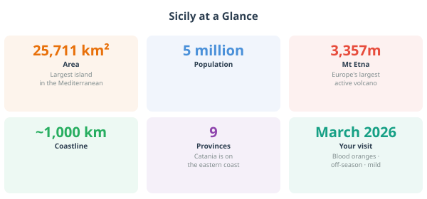
*A clean stats panel alongside a silhouette map of Sicily overlaid on a
western European outline for scale. Stats to include: area (25,711 km²),
coastline (1,484 km), population (5 million), highest point (Etna, 3,357 m),
UNESCO sites (5), neighbouring countries visible on a clear day (Tunisia,
Malta, mainland Italy). Style: bold numbers, simple icons, warm colour palette.*
1.2 Who Made Sicily? The Five-Minute Version
Here is the thing about Sicily: it has been invaded, colonised, conquered, and
ruled by almost every major power in Mediterranean history. The Greeks came.
Then the Romans. Then the Arabs, the Normans, the French, the Spanish. Each
one left something behind — in the food, the architecture, the language, the
face of the person selling you a cannolo.
What makes Sicily extraordinary is not that all these cultures passed through,
but that they layered. They didn't replace each other — they accumulated.
You can see it in a single building in Palermo: Arab arches, Byzantine mosaics,
Norman stonework, Spanish baroque facade, all on the same church. You can taste
it in a single dish: aubergine, pine nuts, raisins, tomato, vinegar —
ingredients and flavour combinations that trace a line directly back to the
Arab kitchen of the 10th century.
Eating in Sicily, it turns out, is a form of time travel.
The cast of characters, in rough order of arrival:
The Greeks arrived around 750 BC and set up colonies along the east and
south coasts. They built Syracuse into one of the most powerful cities in the
ancient world — larger than Athens at its peak. They left behind theatres,
temples, and a geometric approach to town planning that you can still read in
the street grids of Catania and Syracuse. When you stand in the Greek theatre
at Taormina and look out at the sea, you are standing where Aeschylus may have
stood. That is not nothing.
The Romans arrived in the 3rd century BC, took Sicily after a long and
nasty war with Carthage, and promptly turned the island into their grain
basket. Sicily fed Rome. In exchange, the Romans built roads, cities, and some
extraordinary mosaics — the Villa Romana del Casale near Piazza Armerina has
floor mosaics so well preserved they look freshly laid. The Romans were
efficient. They were not the most interesting rulers Sicily ever had.
The Arabs are the surprise. From the 9th to the 11th century, Arab and
Berber forces from North Africa ruled much of Sicily, and what they left behind
was transformative. They brought citrus trees: the orange and lemon groves that
still cover the Conca d'Oro plain near Palermo. They brought sugar cane and the
concept of iced sweets — the ancestor of every granita you will eat on this
trip. They brought rice (arancino), aubergine, and a spice palette — cinnamon,
saffron, cumin — that survives in Sicilian cooking to this day and makes it
unlike any other regional Italian cuisine. They also improved the irrigation
systems, reorganised agricultural production, and by most accounts governed
the island rather well.
The Normans are the strangest chapter. Normans — descendants of Vikings
who had settled in northern France, then carved out territories in southern
Italy — conquered Sicily in the 11th century. What they built there is one of
the genuine artistic miracles of the medieval world: churches that combined
Arab geometric decoration, Byzantine gold mosaics, and Norman stone architecture
into something that shouldn't work but absolutely does. The Cappella Palatina
in Palermo is the finest example. It looks like nowhere else on Earth.
The Spanish arrived in the 15th century and stayed for two and a half
centuries. Their most visible legacy is the baroque — that theatrical,
extravagant, almost defiantly optimistic architectural style that defines the
towns of eastern Sicily. After the catastrophic earthquake of 1693 levelled
most of the east coast, Spanish-era aristocrats and the Church rebuilt on a
grand scale. The result is the Val di Noto, a collection of baroque towns so
remarkable they are a UNESCO World Heritage Site as a group. Catania is one
of them.
Modern Italy arrived in 1861 with unification, which many Sicilians greeted
with ambivalence then and regard with ambivalence now. Sicily remained, and
remains, a place apart. The dialect is so different from standard Italian that
some linguists classify it as a separate language. The culture, the food, the
pace, the priorities — all distinctly Sicilian.
Fun fact to tell your toddler in about fifteen years: The word sugar
comes from the Arabic sukkar, which comes from the Sanskrit sharkara.
Sicily was one of the main routes by which sugar reached medieval Europe.
Every time you eat a cannolo, you are at the end of an ingredient's journey
from ancient India via the Arab world to a pastry counter in Catania. Your
toddler, currently destroying a granita at high speed, is participating in
civilisation.
1.3 The Sicilian Character
Sicilians are not quite like mainland Italians, and they know it. There is a
particular combination of qualities you will encounter: warmth, pride,
pragmatism, a certain philosophical calm in the face of difficulty, and an
extremely well-developed sense of hospitality.
The last one matters most for your trip. You are travelling with a small child.
In Sicily, this is an asset. Children are adored here — openly, effusively,
without the northern European awkwardness about touching strangers' children.
People will stop you in the street to admire your toddler. The waiter will
bring something the child didn't order because he thought they might like it.
The woman at the market will press a piece of fruit into small hands before
you've had a chance to say anything. Accept all of this with grace and a
smile. Grazie mille.
There is also the concept of arrangiarsi — literally "to arrange oneself,"
but really meaning the art of improvising, of finding a way through. Sicilians
have been making do under difficult circumstances for a very long time. It
produces a culture that is resourceful, flexible, and genuinely good at
figuring things out on the fly. This is useful information if your car breaks
down or you arrive at a restaurant to find it closed for a family celebration
and the owner, instead of sending you away, seats you at the family table.
This has been known to happen.
One practical note: Sicilian is spoken alongside Italian, and in older
generations may be preferred. You will hear it in markets, between friends,
and in animated telephone conversations. Standard Italian is universally
understood and will serve you well. A few words of Sicilian — beddu/bedda
(beautiful, said constantly of small children), manciari (to eat, something
you will do a lot of) — will be received with delight out of proportion to
the effort involved in learning them.
A note on the famous Sicilian fatalism: Living on an island that gets
regularly shaken by earthquakes and has an active volcano visible from the
city centre does something to your philosophy of life. Sicilians are not
pessimistic — they are realistic in a way that has been earned over several
thousand years of occupation, natural disaster, and the general difficulty
of being Sicily. When something goes wrong, the response is rarely panic.
It is usually a shrug, a coffee, and the question: what do we do now?
This is an excellent travel mindset. Adopt it.
1.4 Why Catania? (And Not Palermo)
Every guide to Sicily eventually has to answer this question, so let's get it
out of the way.
Palermo is Sicily's capital: bigger, grander, more famous, and the obvious
choice if you are ticking boxes. It has extraordinary things — the Norman
palace, the Cappella Palatina, the Ballarò market, the Teatro Massimo. If you
have ten days and two cities, go to both.
But if you have one week and a toddler and a rental car, **Catania is the
better base**. Here's why.
Position. Catania sits on the east coast, and from Catania you can reach
Etna, Taormina, Syracuse, and the Cyclops coast all within an hour by car.
The east coast has the best concentration of things to see. Palermo is on the
other side of the island — beautiful things exist there too, but you would be
driving two or three hours each way to reach most of what makes Sicily famous.
The airport. Catania Fontanarossa is one of the best-positioned airports
in Italy: 5 km from the city centre, well-connected, easy to exit with a
rental car. You will not waste a day navigating airport chaos.
The city itself. Catania is underrated in a way that Palermo no longer is.
It is scrappier, rougher around the edges, less polished for tourists — and
for exactly those reasons, more real. The market is extraordinary. The baroque
is UNESCO-listed and largely free to walk around. The street food is arguably
better. The prices are noticeably lower. And because fewer first-time visitors
put it on their list, you will find yourself in places that feel like they
belong to the Catanesi rather than to you.
The volcano. Etna is visible from the city. Not in the vague "you might
see mountains on the horizon" sense — on a clear day, from Via Etnea, you look
north and there it is: a massive, snow-capped, occasionally smoking presence.
The city is built on its lava. The cathedral is black with it. The pavements
are made of it. Catania's entire character is shaped by living in the shadow
of an active volcano, and that is fascinating in a way that no amount of
excellent Norman architecture can replicate.
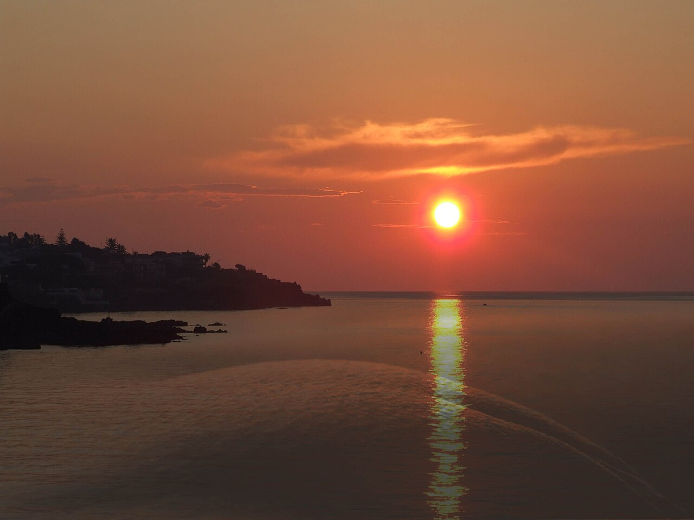
*Should show: Catania's position on the coast with Etna visible behind it,
and annotated distances to the main day trips — Etna (30 km), Taormina (50 km),
Syracuse (60 km), Aci Trezza (15 km). Clean graphic style, could be a
custom illustrated map rather than a satellite image.*
The lava city, briefly: Catania has been destroyed by Etna's eruptions
multiple times. The great lava flow of 1669 reached the sea and added land
to the coastline — Castello Ursino, which was once a coastal fortress, is
now 2 km inland because of it. The city was then levelled by the 1693
earthquake. It was rebuilt, from scratch, in baroque, mostly using the same
black basalt lava rock. There is something almost defiant about a city that
uses the material that keeps destroying it to rebuild itself, over and over,
into something more beautiful each time.
Next: Chapter 2 — Catania: City of Fire & Baroque
Chapter 2: Catania — City of Fire & Baroque
*"Catania is built on lava, destroyed by lava, and rebuilt in lava.
This is either terrifying or poetic, depending on your temperament.
The Catanesi have decided it is both."*
Most travel guides give Catania a paragraph and move on to Taormina. This is
a mistake. Catania is one of the most distinctive cities in Italy — a baroque
UNESCO World Heritage Site built entirely from the material that keeps trying
to destroy it, with a fish market that is one of the great urban spectacles
of southern Europe, a patron saint whose story makes Game of Thrones look
restrained, and a symbolic elephant that has somehow become the most-loved
civic emblem on the island. It deserves more than a paragraph.
Give it two full days. You won't regret it.
2.1 A City Built on Catastrophe
To understand Catania, you have to start with the worst eleven days in
Sicilian history.
On the 9th of January 1693, a foreshock shook eastern Sicily. Two days later,
on the 11th, the main earthquake hit — estimated at magnitude 7.4, still the
most destructive earthquake ever recorded in Italian history. Entire cities
collapsed. Catania was essentially levelled. An estimated 60,000 people died
across the region, about 16,000 of them in Catania alone, in a city of roughly
20,000.
What happened next is the remarkable part.
Rather than abandon the ruins, the surviving Catanesi decided to rebuild. And
not just to rebuild — to rebuild spectacularly. They had the cultural context
for it: this was the height of the baroque era in Europe, and Spanish viceroys
controlled Sicily. The style of the moment was theatrical, ornate, and grand
almost to the point of absurdity. The architects who descended on Catania —
most notably Giovanni Battista Vaccarini — embraced it completely.
The result is a city centre that was essentially designed from scratch in a
single sustained burst of creative ambition. The grid of wide streets (to allow
better earthquake escape routes, a very practical consideration), the sweeping
piazzas, the churches with their extravagant facades, the palaces with their
carved lava stone balconies — all of it built within a few decades of the
disaster. In 2002, UNESCO added Catania and the other Val di Noto baroque towns
to the World Heritage List, recognising that this post-earthquake rebuilding
represents one of the finest achievements of baroque urban planning.
The other thing they rebuilt with is the thing that keeps threatening to destroy
them: volcanic basalt. Black lava stone is everywhere in Catania — the street
paving, the church walls, the facades. When sunlight hits the golden limestone
details against the dark volcanic stone, the whole city glows in a colour
palette unlike anywhere else in Italy. This is Catania's signature look: black
and gold, darkness and light, catastrophe and ornament.
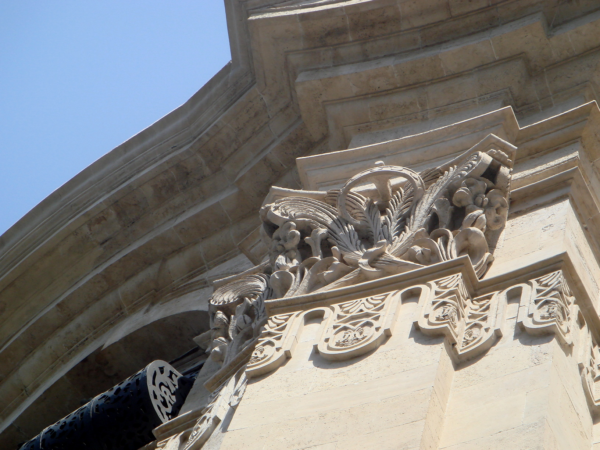
*The ideal shot shows carved baroque details in golden limestone set against
black lava stone — ideally a church facade on a sunny morning with strong
shadows. The Collegiata on Via Etnea or the Cathedral of Sant'Agata work well.
This image should appear early in the chapter to establish the visual language
of the city.*
2.2 The Elephant: Liotru, Symbol of Catania
Every city has a symbol. Rome has the she-wolf. Venice has the winged lion.
Catania has an elephant — and the Catanesi will tell you, with complete
seriousness, that the Liotru (the elephant's local name) is the oldest civic
symbol still in continuous use in the world.
This may or may not be technically true. But the elephant has been on Catania's
coat of arms since at least the Middle Ages, and the story behind it is
wonderful.
The legend goes like this: Eliodoro (or Heliodorus) was a sorcerer who lived
in Catania in the early centuries AD. He could transform himself into an
elephant — or ride one, depending on which version you're told — and used this
ability to terrorise the city. He was eventually defeated and driven out by
Saint Agata's divine intervention. The locals adopted the elephant as a symbol,
apparently deciding that a tamed version of the thing that once threatened them
was exactly the kind of emblem they needed.
The elephant fountain in Piazza del Duomo is the centrepiece of the city.
Designed by Vaccarini in 1736, it shows a small, almost goofy-looking elephant
— carved from a single piece of ancient black lava, possibly pre-Roman — with
an Egyptian obelisk balanced improbably on its back. The obelisk is topped with
the symbols of Saint Agata. The whole construction is simultaneously absurd and
magnificent.
Your toddler will love the elephant. They always do. It's the perfect height
for pointing at and shouting about.
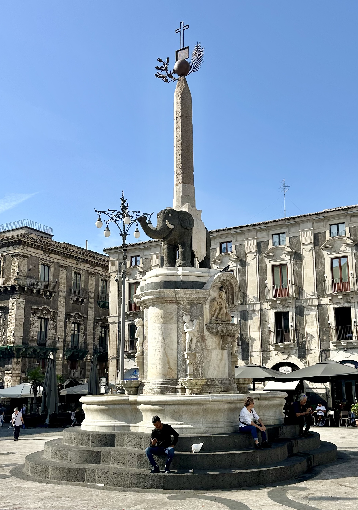
*Shot 1: Close-up of the elephant's face — the black lava texture, the
expression (it genuinely looks a bit confused). Shot 2: Wide shot of the
whole piazza with the fountain in the foreground and the Cathedral of Sant'Agata
behind, ideally at the golden hour when the stone glows warmest.*
Liotru, officially: The name Liotru is a Sicilian corruption of
Eliodoro, the sorcerer. So Catania's beloved elephant symbol is actually
named after the villain of its own origin story. Catania: a city that
turns its enemies into monuments. There's a lesson in there somewhere.
2.3 The Cathedral & Piazza del Duomo
Piazza del Duomo is the heart of Catania and one of the finest baroque
piazzas in Italy. It's also genuinely useful as a meeting point, a place to
sit with a coffee, and a landmark you can always navigate back to. Put it in
your mental map now: when in doubt, head for the elephant.
The Cathedral of Sant'Agata closes the east side of the piazza. It was
built over a Norman structure, which was built over a Roman bath complex, which
was built over earlier foundations — Catania's habit of layering history is
consistent. The baroque facade, completed in the 18th century, is imposing
without being excessive, which is a harder balance to strike than it sounds.
Sant'Agata is Catania's patron saint, and her story is one of those early
Christian martyr narratives that the medieval Church seemed to collect with
some enthusiasm. The short version: Agata was a young Catanese noblewoman in
the 3rd century AD who refused the advances of a Roman governor named
Quintianus. He had her tortured. She died of her injuries around 251 AD,
was canonised, and has been protecting Catania ever since — most notably,
according to local tradition, turning back a lava flow with her veil shortly
after her death.
The slightly longer version involves details that are decidedly not suitable
for the toddler years. Wait until they're older.
The Agata Festival (3–5 February) is one of the largest religious festivals
in Europe — regularly cited alongside the Holy Week in Seville as among the
most intense in the Catholic calendar. For three days, an enormous silver
reliquary bust of Sant'Agata is carried through the city streets by teams of
men in white robes, accompanied by fireworks, candles, music, and roughly a
million people. If your trip falls anywhere near February, this is extraordinary
to witness.
Your March trip will just miss it — but the city's devotion to Agata is visible
year-round in the many votive shrines, the cathedral itself, and the pastries: minnuzzi di Sant'Agata — small white marzipan cakes shaped like the saint's
breasts — are sold in every pasticceria and are, despite the slightly
challenging concept, delicious.
[STROLLER NOTE] Piazza del Duomo is broad, flat, and paved — excellent
pushchair territory. The cathedral interior has a smooth marble floor. This
is one of the easiest areas of the city to navigate with a pram.
2.4 The Markets
La Pescheria — The Fish Market
Go early. Go on a weekday. Go before 10am if you can.
La Pescheria — the fish market — occupies a sunken piazza just behind the
Cathedral, down a short flight of steps and through an arch. From the street
above you might hear it before you see it: the shouts of vendors, the sound
of ice being shovelled, the general controlled chaos of several dozen market
stalls doing the most business they'll do all day.
What you will find inside is one of the great urban spectacles of southern
Europe. Swordfish heads the size of a child's torso. Sea urchins split open
on the spot, their vivid orange interior eaten raw from the shell with a piece
of bread. Piles of sardines, anchovies, and small silver fish heaped on beds
of crushed ice. Octopuses being manipulated with cheerful brutality. Tuna
cut in great red slabs. Shellfish of every description. Vendors who have been
doing this for decades and have elevated the sales pitch to a minor art form.
The colours — the silver of the fish, the orange of the urchin, the red of
the tuna, the blue of the sea on tiled backsplashes — make it one of the most
photographically rewarding places in the city. Come with a camera.
The market is at its best between 7am and 10am. By noon it is winding down;
by 1pm it is gone, and the piazza becomes an ordinary square that gives almost
no indication of what happened there four hours earlier.
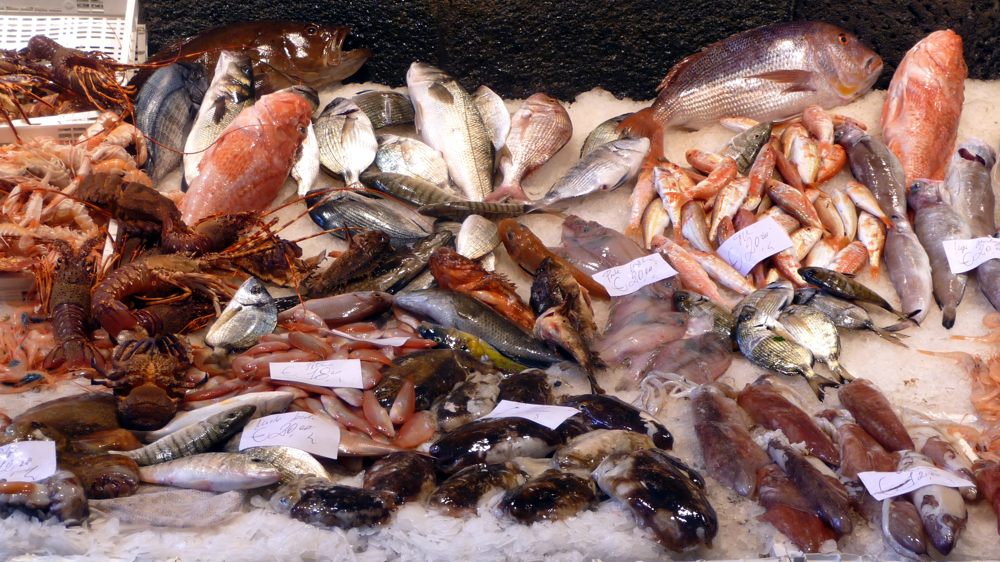
*The iconic shot: a market stall with a full swordfish laid out, or a pile of
colourful mixed fish on ice with a vendor in the background. Bright, saturated,
slightly chaotic. Morning light works best — the market is shaded so artificial
light from the stalls creates a useful warm glow.*
[STROLLER NOTE] La Pescheria is down a flight of steps from street level
(there is usually a ramp or alternative access to the side — worth locating
before you descend). Inside, the passages between stalls are narrow and can be
slippery with water and ice. A pushchair is manageable but you'll be navigating
carefully. Consider a carrier for the market itself, leaving the pushchair
folded at the top.
[BUDGET TIP] The market is free to walk through and the spectacle costs
nothing. If you want to eat here: vendors selling boiled octopus, sea urchin
on bread, and fried snacks are operating along the edges of the market — prices
are low and the food is extraordinary. This is one of the best-value food
experiences in Sicily.
Mercato di Via Plebiscito
Less famous than La Pescheria and better for it. This is where Catanesi
actually do their weekly shopping — fruit, vegetables, cheeses, olives, dried
goods, the occasional live chicken, all sold by vendors who are far more
interested in their regulars than in tourists. Prices are lower, the atmosphere
is calmer, and the produce is outstanding.
Good for: stocking up on picnic supplies, buying blood oranges by the kilo
(they're grown near here and cost almost nothing), finding good local cheese
to take home, and seeing an undramatised version of daily Catanian life.
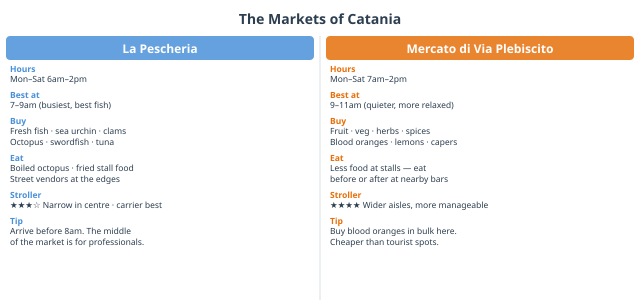
*Two-column layout: La Pescheria on the left, Mercato di Via Plebiscito on the
right. For each: opening hours, best time to visit, what to buy, what to eat
there, stroller rating (amber/green), insider tip. Simple icon-based design,
consistent with the rest of the guide.*
2.5 Via Etnea & the Baroque Set Pieces
Via Etnea is Catania's main street, running north from Piazza del Duomo
for about 2.5 km. It is also, on a clear day, one of the more dramatic
urban vistas in Italy: stand at the southern end and look north, and Etna
sits at the end of the avenue like a piece of scenery that is too large and
too perfectly placed to be real.
Walk north along Via Etnea and you are walking through the baroque drawing room
of Catania. The important things to look at (not necessarily go inside, unless
you want to — most are open and free):
The Collegiata — about 200m north of the piazza, on your right. An
extraordinary facade with deeply carved figures that cast dramatic shadows.
This is the building to photograph for the definitive "Catania baroque" image:
black basalt plinth, white limestone columns, everything slightly too much in
the best possible way.
The Benedictine Monastery — reached via a side street off Via Etnea (look
for Via dei Crociferi first, a pedestrian street lined with baroque churches
that looks like a film set). The Monastero dei Benedettini is one of the
largest Benedictine monasteries ever built — it began construction in 1558,
was destroyed in the 1669 eruption, was rebuilt, was then destroyed in the
1693 earthquake, and was rebuilt again, larger, in the 18th century. It now
houses the Faculty of Humanities of the University of Catania, which must make
it the most beautiful university building in Italy. Guided tours are available
and worth taking — they include the Arab-Norman remnants in the basement and
the rooftop terrace with its view over the city.
Via dei Crociferi — a short pedestrian street running east off Via Etnea,
flanked on both sides by baroque churches and palaces. Very photogenic, mildly
chaotic with university students, and completely free. This is where the main
Saint Agata festival procession passes in February, and the route is marked
with plaques.
Piazza Bellini — named after Vincenzo Bellini, Catania's most famous son.
The composer of Norma and La Sonnambula was born a few streets away in
1801. The piazza has his monument and also contains the Greek-Roman Theatre
(see below). A good spot to stop for a coffee at one of the bars on the square
— local prices, student crowd, good people-watching.
[STROLLER NOTE] Via Etnea itself is mostly flat and has reasonable pavement
width. The side streets — including Via dei Crociferi — are cobbled in lava
stone, which can be uneven. A pushchair gets through, but it's not smooth
going. Worth it.
2.6 The Roman Ruins
Catania was a significant Roman city, and the evidence is still there —
you just have to know where to look, because it's been built around, built on
top of, and incorporated into everything else.
The Roman Theatre and Odeon sit in the middle of a residential
neighbourhood near Piazza Bellini, and the contrast is surreal and wonderful.
The theatre is a proper Roman structure — 2nd century AD, capacity around
7,000 — with seating that has been partially excavated from under the buildings
that were built directly on top of it over the centuries. The smaller Odeon
next door was used for music and recitals. You can walk down into the theatre
and see where medieval and baroque Catania was built literally on top of the
ancient city.
The Amphitheatre at Piazza Stesicoro is even more disorienting. A large
section of a Roman amphitheatre — second only to the Colosseum in scale in
Italy when complete — sits partially exposed in the middle of a busy traffic
roundabout in the city centre. You look down through a fence at Roman arches
while cars circle above. The rest of it is under the piazza and the surrounding
buildings. It's a striking reminder that Catania has been layering civilisations
on top of each other for a very long time.
[BUDGET TIP] The Roman theatre has a small entrance fee (a few euros for
adults; young children usually free — confirm on arrival). The amphitheatre
at Piazza Stesicoro is visible for free from street level; the exposed section
is modest but the context is striking. You don't need to pay to understand it.
2.7 Castello Ursino
At the southern edge of the historic centre, far enough from the main tourist
drag to feel slightly forgotten, stands Castello Ursino — a Norman castle
built by Holy Roman Emperor Frederick II in the 1230s.
When it was built, it sat on a promontory at the edge of the sea. Then the
1669 lava flow arrived, extended the coastline by about 800 metres, and left
the castle stranded inland. It hasn't moved — Catania built around it instead.
The castle's situation is now so perfectly illustrative of the city's
relationship with Etna that it functions almost as a metaphor.
The exterior is imposing: thick Norman walls, four corner towers, a serious
air of "do not bother us." Inside, the Civic Museum houses an eclectic
collection — fragments of ancient sculpture, Egyptian artefacts, medieval
stonework, paintings from various eras — which is engaging if you are in the
mood for a museum, and rather dark and still if you are accompanied by an
energetic toddler.
Practical verdict: The castle exterior and courtyard are worth visiting
regardless. The museum is best tackled if you have a sleeping child in a pram
or a very engaged adult who wants to spend real time in front of things. Not
the first priority with a toddler in tow, but a good wet-weather option or
late afternoon stop when the heat breaks.
[BUDGET TIP] Museum entrance is free on certain days — usually the first
Sunday of the month, and sometimes other days — though this changes, so check
the Comune di Catania website or ask at the tourist office when you arrive.
The courtyard is accessible independently of the museum.
On Catania's pace: Unlike Taormina (manicured, tourist-facing) or
Syracuse (genteel, slightly self-conscious about its own beauty), Catania
moves at its own rhythm and doesn't much care if you keep up. The streets
are busy, the drivers are assertive, the market vendors are not waiting for
you to finish reading the sign. This is not unfriendliness — it is just a
city that is busy living rather than busy being visited. Once you adjust
to the tempo, it is deeply energising. Give yourself a day to find your
feet, and then lean in.
Next: Chapter 3 — Your Base: Practical Catania
Chapter 3: Your Base — Practical Catania
*One rule for this trip: park the car, forget the car. Everything you
need in Catania is on foot. The car is for day trips only. This decision
alone will eliminate roughly 80% of potential holiday stress.*
You are staying in or immediately next to the historic centre. This is the
right call, and it changes the character of the whole trip. Everything in
Chapter 2 is walkable from where you are sleeping. The fish market is a
10-minute walk. Piazza del Duomo is probably 5. The best bars and pasticcerie
are on your doorstep. You will not be relying on the car to do anything in
the city itself — and that is a relief, because central Catania is not designed
for people who want to drive through it in a relaxed manner.
What follows is everything you need to know about operating out of your base
before the day trips begin.
3.1 Getting Your Bearings
Catania's historic centre is compact in the best way. The main axis is Via Etnea, running north from Piazza del Duomo toward the volcano.
Everything of note is either on this street or within a short walk of it. Piazza del Duomo — the elephant fountain — is your mental anchor point.
When in doubt, navigate back to the elephant and reorient.
Key walking distances from the historic centre (roughly):
Destination
On foot
La Pescheria fish market
3–5 min
Castello Ursino
15 min
Roman theatre
10 min
Benedictine Monastery
10 min
Villa Bellini (public park)
15 min
Best gelato on Via Etnea
8 min
The city is largely flat in the centre, with some gentle slopes northward
along Via Etnea. The main hazard underfoot is the lava-stone cobbling in the
side streets — uneven, occasionally slippery when wet, and best negotiated
with sensible shoes rather than the sandals you optimistically packed.
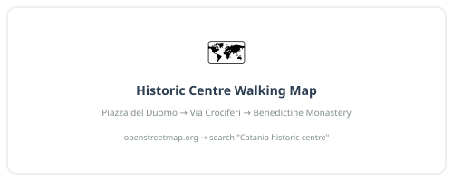
*A clean illustrated map centred on Piazza del Duomo, with walking-time rings
(5 min / 10 min / 15 min) and key landmarks marked. No driving routes — this
is a pedestrian map. Landmarks: La Pescheria, Cathedral, Via Etnea, Roman
Theatre, Benedictine Monastery, Castello Ursino, Villa Bellini, best bar for
granita. Style: warm, illustrated, not a Google Maps screenshot.*
3.2 The Car: Park It and Mostly Forget It
You have the car. You will use it for every day trip. In the city, you
will not use it at all if you can help it. Here's how to make that work.
Parking once and leaving it there
The ideal scenario: you arrive, you drive to your accommodation, you unload,
you park the car in a nearby car park, and you do not see it again until the
first day trip. The area around the historic centre has several options:
Parcheggio Borsellino (Via Dusmet, near the waterfront): large, covered, close to the cathedral area. A solid choice for the whole week.
Piazza Cavour car park: slightly north of the centre, easy access, reasonable rates.
On-street blue lines: paid street parking, marked with blue lines. These work fine for short stays; for leaving the car all week, a proper car park gives more peace of mind.
Check with your accommodation — many hotels near the historic centre have
an arrangement with a nearby garage, sometimes at a reduced rate. Ask when
you book, or when you arrive.
ZTL: The Thing That Will Fine You Without Warning
This is important. Read it.
ZTL stands for Zona a Traffico Limitato — a Limited Traffic Zone.
Catania's historic centre has a ZTL that covers most of the streets around
Piazza del Duomo and the baroque core. Cameras at the zone boundaries
photograph your number plate automatically. If you drive into a ZTL without
a permit, you will receive a fine in the post — typically €80–150 — weeks
after you've forgotten the moment entirely. It is an extremely efficient system.
The key rules:
Do not drive through the centre to reach your hotel. Ask your accommodation for instructions on how to approach from a permitted direction, or whether they have a ZTL exemption code for your plate.
Loading and unloading is sometimes permitted at restricted hours (often 7–10am) — again, ask your accommodation.
Google Maps sometimes routes you through ZTL zones. It does not know or care about the fine you will receive. Override it if you see you're heading into the old town by car.
When in doubt, park outside the zone and walk. Always the right answer.
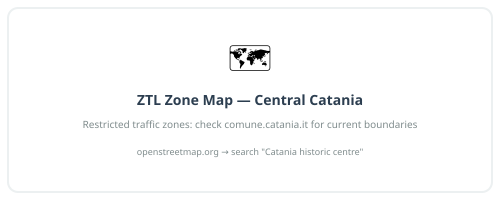
*A simple diagram showing the ZTL boundary in red, camera positions marked,
and green approach routes from outside the zone toward the nearest car parks.
Should include a clear callout: "Stay outside the red line by car." Not a
complex map — clarity is more important than completeness.*
Driving the Day Trips
For each day trip, the practical driving notes are in the relevant chapter.
But some general points about driving in Sicily that are worth having once:
The driving culture is best described as assertive rather than aggressive.
Sicilian drivers are decisive, quick to fill gaps, and treat lane markings as
helpful suggestions. They are not, in general, angry or confrontational — the
driving style is more like a fast, fluid negotiation than the angry honking
of, say, Rome or Naples. Relax your shoulders, match the pace, and you'll
be fine within a day.
Roundabouts work on the principle that whoever is more committed to
entering has priority. This is not what the Highway Code says. It is,
nonetheless, how it works. Enter with confidence or wait for a clear gap.
Speed cameras are present on motorways and on some main roads. Indicated
limits are enforced; the cameras are often signed in advance, which does not
always leave enough stopping distance. Drive to the limit consistently rather
than speeding between cameras.
The motorway (A18/A19): fast, well-maintained, tolled. Collect a ticket
on entry, pay on exit. Keep a few euros in coins or a card in an accessible
place. The toll amounts for your day trips are all modest (€2–5 each way).
3.3 Living in the Historic Centre
Staying central means the city's rhythms become your rhythms. Here's what
those look like on a typical day:
Early morning (7–9am): the market is in full swing, the bars are doing
their best business of the day. Get to La Pescheria before 10am at least
once. Have your first granita con brioche standing at a bar counter, the way
locals do. This is not breakfast as you know it. It is better.
Mid-morning (9–11am): the best time to walk, visit churches, and cover
ground before the heat builds (even in March, midday can get warm). The piazzas
are active but not yet crowded with tour groups.
Midday (12–3pm): this is riposo time in spirit if not always in practice.
Many smaller shops close. The sensible approach with a toddler is to align
the child's nap with this window — find shade, find a café, stop moving.
Afternoon (4–7pm): the city comes back to life. This is the time for
the passeggiata — the early evening stroll that is a genuine social institution,
not a tourist performance. Families, teenagers, elderly couples, all walking
the same streets with no particular destination. Join in. Via Etnea and
Piazza del Duomo are the main stages.
Evening (8pm onwards): dinner, in the Sicilian sense, does not start
before 8pm. If you walk into a restaurant at 6:30pm, you will be seated,
but you will be eating alone. The city's evening energy is real and late —
even on weekdays, the streets around the baroque centre stay animated until
midnight. With a toddler, you will probably not be part of this, but you
can sit at an outdoor table and watch it happen over a glass of Etna Bianco.
Supplies and essentials within walking distance
Water: buy a large bottle (or two) from a supermarket and refill from it.
Tap water in Catania is safe to drink. The street-level water fountains
(nasoni) around the city also run constantly with fresh water — keep a
small bottle and top up.
Supermarkets: there is a Lidl and a Carrefour within 10–15 minutes' walk
of the historic centre. For fresh produce, the Mercato di Via Plebiscito
(see Chapter 2) is both better and more interesting. Good for: fruit, blood
oranges by the bag, local cheese, bread, snacks for the day trips.
Pharmacy: the green cross symbol. There is at least one within a few
minutes of wherever you are in the historic centre. Hours are typically
9am–1pm and 4pm–8pm; most post a list of the nearest farmacia di turno
(the one on overnight/emergency duty) in the window.
Baby supplies: nappies, wipes, formula — all available at supermarkets
and some pharmacies. You do not need to pack for a siege. A few days' supply
on arrival, then restock locally.
3.4 When It Rains
March in Catania brings some rain. Not constant, not all-day deluges as a
rule — more likely short periods of real rain between stretches of bright cool
weather. But it will happen, and it's worth having a plan that isn't "stare
out of the window."
The good news: Catania is a much better rainy-day city than most guides
suggest. Many of its best things are indoors or partially covered.
Best options when it rains, in rough order of recommendation:
A very long bar breakfast. Do not underestimate this. A good Catanian
pasticceria on a rainy morning — minnuzzi di Sant'Agata, pistachio
cornetti, sfogliatelle, granita, coffee — is one of the great indoor
experiences of the trip. Take a newspaper or a book. Let the toddler eat
their body weight in pastry. There is no rush.
The Benedictine Monastery (guided tour). Entirely indoors, genuinely
spectacular, one of the most interesting spaces in the city. The tour takes
you through the baroque state rooms, the underground Arab-Norman remnants,
and up to the rooftop terrace (skip the terrace in heavy rain; the rest
works fine). Book in advance — tours fill up.
Castello Ursino and the Civic Museum. Dark, quiet, sheltered. Better in
the rain than in glaring sunlight, honestly. Good for: the castle architecture,
some interesting Greek pottery, a dry hour when the toddler is in the pushchair.
Palazzo Biscari. The finest private baroque palace in Catania, with a
famous oval ballroom with frescoed ceiling. Tours run on specific days —
check the schedule before your trip and try to book a rainy-day slot
in advance. A treat for adults; manageable with a calm toddler.
The covered section of La Pescheria. Even in rain, the fish market
operates and part of it is under cover. A rainy morning here is actually
good — the light is different, there are fewer tourists, and the vendors
are in an even better mood because they appreciate you showing up.
Drive to Ortigia. Counterintuitive for a rainy day, but Ortigia in the
rain is beautiful — the pale limestone streets, the baroque cathedral, the
covered market, the sense of an island shutting itself in. The drive is an
hour; the reward is real. Pack an umbrella rather than skipping it.
Drive to the Paolo Orsi Archaeological Museum (Syracuse). If you're
planning Syracuse as a day trip anyway (see Chapter 7), the Paolo Orsi
museum — one of the finest archaeological museums in Europe — is entirely
indoors and adjacent to the Neapolis park. A rainy Syracuse day can easily
become a museum morning + Ortigia afternoon. Actually a great combination.
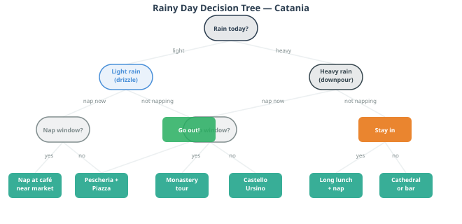
*A simple flowchart: Is it light rain or heavy? Is the toddler awake or in
nap window? Do you want to stay in the city or drive? Each path leads to 2–3
specific recommendations. Fun, slightly tongue-in-cheek style — not a grim
emergency manual.*
On Sicilian rain: locals treat rain with a mixture of mild irritation
and philosophical acceptance. An umbrella appears from nowhere. The café
fills up. Conversation continues. The market keeps going. There is no
culture of cancelling plans because of weather — the Sicilian approach
is to absorb it and carry on, which is, when you think about it, the
right approach.
3.5 Toddler Logistics
Medical
Hospital: Ospedale Garibaldi Centro on Piazza Santa Maria di Gesù is the
main central hospital, about 15 minutes on foot from the historic centre.
For anything non-emergency, a pharmacy should be the first stop — Sicilian
pharmacists are well-trained and willing to advise.
European Health Insurance Card (EHIC): bring it. It covers emergency
treatment in Italian public hospitals without cost. If you don't have one,
sort it before you travel — it takes minutes to apply online and the process
is free.
Pharmacies near the centre: there are several on and around Via Etnea.
The farmacia di turno rota (emergency cover) is posted in the window of
every pharmacy — useful if you need something at 11pm.
Stroller Reality
The historic centre of Catania presents a tiered challenge for pushchairs,
which this guide has been honest about throughout. To consolidate:
Green (smooth sailing):
Piazza del Duomo and the immediate surroundings
Via Etnea itself (the main street is paved, relatively smooth)
Inside the cathedral and Castello Ursino courtyard
The waterfront area
Amber (manageable, with care):
The approach streets around La Pescheria (inside the market, step down with a ramp available)
Most of the main pedestrian shopping streets
Villa Bellini park (gravel paths but mostly level)
Red (carrier recommended):
The lava-stone side streets in the old Arab quarter
Via dei Crociferi (beautiful but uneven)
The Roman theatre interior
Anything described as "a lane" or "a vicolo"
The honest recommendation: bring a lightweight carrier as a backup.
Not as a replacement for the pushchair — the pushchair is essential for
nap-time logistics — but as an alternative for the 20-minute stretches where
the pushchair becomes more hindrance than help. The carrier packs small.
Use both, depending on terrain.
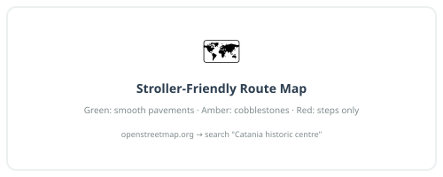
*Same base map as Section 3.1, now colour-coded: green streets, amber streets,
red streets. Clear, simple, honest. The most genuinely practical infographic
in the guide.*
Next: Chapter 4 — Day by Day: A Sample Week
Chapter 4: Day by Day — Your Week
14–20 March 2026
*This is a suggested itinerary, not a contract. Things will go sideways.
The toddler will have opinions. It will rain on a day you planned for the
beach. A restaurant will be closed for a cousin's wedding. Embrace all of
it. The best travel moments are usually the unplanned ones — and Sicily
is very good at producing them.*
The Setup
You arrive: Saturday 14 March, evening. You leave: Friday 20 March, at the airport by ~1pm (allow for a
12:30pm departure from the apartment; the airport is 10 minutes away
by car from your address).
Your apartment: Via Cristoforo Colombo 20, 95121 Catania. Waterfront
district, between the historic centre and the port. Piazza del Duomo is
about 15–20 minutes on foot heading north. The airport is 10 minutes by
car heading south. A practical base in all directions.
Your group: 2 adults + 2 grandparents + 1 toddler — five people,
all travelling together, all days. The grandparents are comfortable walkers
but prefer flat terrain and a paced rhythm — no forced marches, no long
staircase climbs, no hours on uneven volcanic rock. This is completely
workable and is already woven into how each day below is structured.
One logistical flag — the car: Five people plus luggage for a full week
is tight in a standard 5-seater rental car. If the car booked is a compact
or mid-size, you may want to upgrade to a larger vehicle (estate/MPV) before
the trip — day trips will involve the full group plus everything needed for
a toddler and a day out. Worth confirming this with the rental company now
rather than at the pickup desk.
Your actual days:
Date
Day
Status
Sat 14 Mar
Day 1
Arrive evening
Sun 15 Mar
Day 2
Full day
Mon 16 Mar
Day 3
Full day
Tue 17 Mar
Day 4
Full day
Wed 18 Mar
Day 5
Full day
Thu 19 Mar
Day 6
Full day
Fri 20 Mar
Day 7
Morning only — depart ~12:30pm
The Actual Weather Forecast
Let's be honest about this upfront, because the forecast changes
everything about how the week should be ordered.
Date
Forecast
Rain chance
Sat 14 Mar
Afternoon showers — you arrive in the evening
62%
Sun 15 Mar
Showers, breezy
87%
Mon 16 Mar
Downpours in the afternoon, windy
90%
Tue 17 Mar
Afternoon showers, rain overnight
90%
Wed 18 Mar
Downpours in the afternoon
80%
Thu 19 Mar
Partly sunny ☀️
13%
Fri 20 Mar
Morning shower, then rain
85%
Source: AccuWeather Catania
*(Forecasts beyond 7–10 days carry uncertainty — check again a few days before
travel, but plan on the basis of this for now.)*
The headline: Thursday 19 March is the only genuinely clear day of the week,
and it is therefore the day for Etna. Non-negotiable. Etna in cloud and rain
is not Etna.
The pattern for Sunday–Wednesday: rain is predominantly in the afternoons
("afternoon showers", "downpours in the pm"). This is the key piece of
information. Mornings are often better than afternoons. Day trips should depart
early, do the outdoor sections in the morning, and be indoors or heading home
by the time the afternoon rain builds. This is workable.
Friday morning: 85% chance of a morning shower, but you're departing
at 12:30pm. Market run early, back to pack by 11am, drive to airport — the
rain is an inconvenience, not a crisis.
Structural notes
Toddler nap logic is built into every day — protecting the midday window
(roughly 12:30–3pm) for something stationary. This week, the midday nap
window coincides naturally with the worst of the afternoon rain. The universe
is cooperating.
The car stays parked on city days. On day trip days, you leave early
(7:30am) to front-load the outdoor portions before the afternoon deteriorates.
The format for each day:
Morning
Best hours — before the afternoon rain builds
Midday
Nap window — strategic stillness (also: the rain arrives)
Afternoon
Indoor or covered options when it's wet; outdoor if it clears
Evening
Passeggiata, aperitivo, dinner at Sicilian time
Ratings
Stroller friendliness / Budget / Exertion level
Saturday 14 March — Arrive & Find Your Feet
62% rain in the afternoon — you arrive in the evening. This is fine.
You have driven from the airport with luggage and a toddler who has been
on a plane. Via Cristoforo Colombo 20 is ten minutes from the airport by
car. Check in, drop the bags, park the car.
Evening
If the rain has eased by the time you arrive and settle: walk north for
15 minutes toward Piazza del Duomo for a first look. The elephant
fountain in the evening is a good introduction. Or don't — it's a rainy
Saturday and you've just arrived. The piazza will still be there tomorrow.
Find a restaurant within easy walking distance of the apartment. Something
simple, close, no heroics. Pizza is legitimate on a first wet evening in
Sicily and Sicily does it well.
Tonight: look at the forecast for the week, absorb the fact that Thursday
is your clear day, and let the rest of the planning follow from that.
Stroller
Budget
Exertion
★★★★★ Evening waterfront streets, flat
€ — One meal
Minimal — arrival day
Sunday 15 March — Deep Catania
87% rain. Showers, breezy. This is a Catania day — and Catania handles rain better than you'd expect.
The good news: most of what makes Catania's city experience extraordinary
is either indoors or partially covered. The fish market operates in rain.
The baroque facades are, if anything, more dramatic when wet — the black
lava stone deepens in colour and the carved limestone takes on a sheen.
This is not a wasted day. It is a different kind of Catania day.
Morning (earlier is drier — aim to be out by 8am)
La Pescheria, the fish market. Rain does not stop the market. The vendors
are there, the fish is there, the chaos is there. Part of the market is
under cover; the rest gets wet along with everyone else. Take the carrier
for the toddler inside (narrow, wet underfoot). Eat something from the
edge vendors — fried things, boiled octopus, whatever is in your hand
before you've made a decision.
From the market, head to Piazza del Duomo — the elephant fountain in
the rain, the cathedral facade. Then decide whether to shelter or walk.
If it's light rain:Via dei Crociferi (the baroque side street —
manageable under an umbrella, worth it), and the exterior of the **Benedictine
Monastery** facade.
If it's heavy: inside the Cathedral of Sant'Agata — free, large,
quiet. The baroque interior holds up for 20–30 minutes without needing to
be an art historian.
Midday
Lunch near Piazza Bellini — university area, honest pricing, indoor
seating. Long lunch. Nap at the table or back at the apartment.
Afternoon
This is when Sunday's rain is worst. Plan for indoor options:
Benedictine Monastery tour (if you booked in advance — worth doing for
a wet afternoon). Two hours, entirely indoors, one of the most extraordinary
spaces in the city. The tour covers the baroque state rooms, the Arab-Norman
remnants in the basement, and the rooftop terrace (skip the terrace today).
Castello Ursino if the monastery isn't available. The Norman castle
interior is dark and quiet; good for an hour when it's raining outside.
Alternative: do not fight the afternoon rain. Go back to the apartment,
make tea, let the toddler play, look at the wet street. This is also a
completely valid use of a wet Sunday afternoon in Sicily.
Evening
Aperitivo if the rain eases (it may — the forecast says showers, not
continuous rain). A bar with a covered terrace, something local to drink,
watching the Catanesi manage the weather with characteristic indifference.
Dinner nearby, early enough for the toddler.
The Sicilian rain approach: the locals carry an umbrella and continue.
There is no culture of cancelling plans due to weather. The cafés fill up.
The market continues. The passeggiata moves a little faster. Match the energy.
Stroller
Budget
Exertion
★★★☆☆ Market is tricky; cathedral and piazza fine
€€ — monastery tour + lunch
Low-medium — indoor-focused day
Monday 16 March — Syracuse & Ortigia
90% rain, downpours in the afternoon, windy. Go early, be indoors by afternoon.
Syracuse is the right day trip for a wet day, and here is why: the best of
Syracuse comes in two parts — the open-air Neapolis Archaeological Park
in the morning, and Ortigia (the island old town) in the afternoon.
The park is weather-sensitive; Ortigia is not. The plan: do the park in the
morning before the afternoon downpours arrive, and let the rain come while
you're already on Ortigia with its covered streets and café tables.
Morning (leave the apartment by 7:30am — this early start matters today)
Drive south on the A19 motorway — 1 hour from Catania. From Via Cristoforo
Colombo, you are already pointing roughly southward; the initial stretch
toward the airport is familiar ground from arrival day.
Park at the Neapolis Archaeological Park entrance. Do the outdoor section
now, while the morning is on your side:
The Greek Theatre (5th century BC, one of the best preserved in the world — see Chapter 7 for the full account). Sit at the top of the seating tiers. Allow a moment.
The Roman Amphitheatre immediately adjacent. The contrast between what the Greeks and Romans chose to build for public entertainment is worth looking at directly.
The Ear of Dionysius — the cave Caravaggio named, where a whisper at one end is audible at the other. Take the toddler to the far end and whisper. This is a legitimate use of 2,300 years of architecture.
A note for the grandparents in the Neapolis park: the main paths between
the Greek theatre, the Roman amphitheatre, and the Ear of Dionysius are gravel
— uneven in places, but walkable at a measured pace with good shoes. The Greek
theatre seating is cut stone tiers with no handrail; going partway up is fine
and gives the view. The Ear of Dionysius cave is flat-floored and easy.
The Paolo Orsi Museum alternative (see below) is entirely indoors and
flat — a good fallback if the park terrain is too much in the wet.
Aim to be done with the park by noon, before the afternoon rain builds.
If it's already raining heavily on arrival: go directly to the **Paolo
Orsi Archaeological Museum** instead — one of the finest archaeological
museums in Europe, entirely indoors, immediately adjacent to the park entrance.
Covers the same ground as the park through extraordinary objects. Allow 2 hours.
Also the right call if the grandparents find the park terrain difficult in the wet.
Midday
Cross to Ortigia — 10 minutes by car. Lunch in the streets behind
the waterfront (not the obvious tourist restaurants on Piazza Archimede —
one lane back, where the prices and quality improve). The Ortigia market
on Via Trento may still be running if you arrive before noon.
Nap on the Ortigia waterfront — benches facing the sea, the pram doing its
work. One of the better nap-window locations of the week, and in the rain,
the harbour has a particular quiet to it.
Afternoon
Walk Ortigia in the rain. This is not a hardship.
The Cathedral — built into a Greek temple, the original Doric columns
still visible inside the baroque church. Free to enter. The interior is warm
and dry and extraordinary.
The Fountain of Arethusa — a natural freshwater spring at the southern
tip of the island, papyrus plants growing at the edge of the sea. Worth
seeing in any weather; the rain gives the stone a different quality.
Aperitivo on the waterfront if it eases toward 5pm. If not: a bar
with indoor seating, a glass of Nero d'Avola, and the satisfaction of having
had a full Syracuse day in difficult weather.
Evening
Drive back — 1 hour. Dinner near the apartment, simple and close. An early
evening after a long day.
Stroller
Budget
Exertion
★★★☆☆ Ortigia excellent; park gravel paths harder in rain
€€ — entrance fees + lunch
Medium — a long day, managed well
Tuesday 17 March — Taormina
90% rain, afternoon showers. Go very early. Be at the theatre before the clouds settle.
This is the difficult call of the week. Taormina at 90% rain is not the
same as Taormina on a clear day — the famous view from the Greek theatre
(stage arch, sea, Etna behind) depends on visibility that rain can eliminate.
But Taormina in light rain, with fewer tourists and the town quieter than
in any other conditions, has its own appeal.
The strategy: leave early enough to be at the theatre by 9am, when it
opens and before the worst of the day typically arrives. Do the outdoor
sections in the morning window. Be back on the Corso for lunch, where rain
is manageable. Drive back before the afternoon downpours.
If the morning forecast on Tuesday specifically looks like heavy cloud from
the start, reconsider. Swap Tuesday and Wednesday (coast day Tuesday, Taormina
Wednesday) and see if one morning is better than the other. Both are wet;
choose the less wet one for Taormina.
Morning (leave the apartment by 7am — earlier than usual)
A18 motorway north — 50 minutes. Park at Mazzarò (lower car parks at
the base of the cliff), take the funivia cable car up. The cable car
in rain: perfectly fine, and the views going up through mist have a drama
of their own.
A note for the grandparents in Taormina: the cable car up is fine for
everyone. At the top, the Corso Umberto is flat, smooth, and entirely
comfortable. The approach into the Greek theatre involves a short walk on
uneven ancient stone, with some steps. Entirely manageable at a steady pace;
no need to rush. The upper seating tiers (the best viewpoint) involve a
further climb — the grandparents can sit at the lower orchestra level and
still see the stage, the sea arch, and the Etna backdrop. The **Piazza IX
Aprile terrace and Villa Comunale** gardens are both flat and easy.
Teatro Greco-Romano first, immediately, while the morning is on your side.
The theatre opens at 9am. In rain, the tour groups are smaller, the space
is quieter, and the stage-sea-Etna composition — even if Etna is partly
cloud-covered — is still moving. Rain has a way of making ancient ruins feel
more ancient. The upper tiers are exposed to weather; the theatre is not.
Dress for it.
After the theatre: Piazza IX Aprile (the great terrace viewpoint — even
in cloud, the coastline view is striking). Villa Comunale (the English
gardens — sheltered paths, a toddler run-around in light rain).
Midday
Lunch just off the Corso Umberto, under a proper roof. Long lunch. If it's
raining hard: this is now an indoor afternoon. The Corso itself is
walkable under umbrellas, and the ceramics shops are warm and dry.
Nap in a café, or in the car on the drive back.
Afternoon
Drive back by 3pm — before the afternoon deteriorates further and the A18
southbound traffic from Taormina builds.
Evening
An easy evening — the day was enough. Aperitivo near the apartment, dinner
nearby.
If Tuesday morning looks genuinely terrible (heavy cloud, zero visibility):
swap to the coast alternative below and try Taormina on Wednesday when
the rain drops to 80%. Neither day is ideal; the morning window is the
only variable you can control.
Stroller
Budget
Exertion
★★☆☆☆ Carrier needed for theatre; Corso manageable
€€€ — parking + funivia + tourist-town prices
Medium — clifftop walking in wet weather
Wednesday 18 March — The Coast
80% rain, downpours in the afternoon. Morning coastal visit, indoor afternoon.
80% is still a lot of rain, but it's the lowest number between Sunday and
Thursday. And the coast trip — Aci Trezza, Aci Castello, the Cyclops sea
stacks — is the most rain-resistant of the remaining day trips. The sea
stacks look dramatic in any weather. Aci Castello on its basalt rock over
a grey sea is a genuinely different kind of impressive. And Acireale
(10 minutes further north) is entirely manageable in rain.
Morning (leave the apartment by 9am — this is a short drive)
Drive north along the coastal road from the apartment — the sea immediately
to your right. Aci Trezza is 20 minutes away, no motorway, no toll.
The Faraglioni (the Cyclops sea stacks) from the harbour in the rain:
the basalt columns rise out of grey water under low cloud, and the
mythological weight of the place — Polyphemus hurling them at Odysseus —
feels more real, not less. Walk the waterfront. Get a coffee. Let the child
run at the sea if it's only light rain.
From Aci Trezza, drive 10 minutes south to Aci Castello — the Norman
castle balanced on its basalt platform over the sea. The exterior in rain
is dramatic. Go up if the toddler's energy allows.
Midday
Seafront trattoria in Aci Trezza — the fish was in the water this morning.
Order whatever the waiter recommends. House white, cold. Nap in the pram
along the sheltered part of the waterfront.
Afternoon
Two directions depending on how the afternoon rain develops:
If light rain: continue up the coast to Acireale (10 minutes further
north from Aci Trezza). A small baroque city on the clifftop — mostly
ignored by tourists and entirely worth an hour. The piazza, the cathedral,
the excellent pasticcerie. The belvedere over the coast if the weather allows.
Completely manageable in the wet.
If heavy rain: drive back to Catania (20 minutes) and call the afternoon
a rest day. You've had the coast; you've had the sea stacks; the rain wins
the afternoon. Go to the apartment, make tea, read something.
Evening
An easy evening — you've earned it after three days of navigating rain.
Aperitivo, something good for dinner. You have Etna tomorrow.
Stroller
Budget
Exertion
★★★★☆ Good along the waterfront; rock platforms need a carrier
€ — Cheaper eating, no entrance fees
Low — the rest day in a rainy week
Thursday 19 March — Mt Etna ☀️
13% rain. Partly sunny. This is your day.
This is why the whole week has been ordered this way. Thursday is the
only clear day of the week. Etna gets it. Every other day trip was chosen
partly for its rain-resilience, specifically to save this day for the
volcano. Go.
Etna with the full group — an honest plan
The classic Etna experience — cable car to 2,500m, then 4x4 jeep to 2,900m
on raw lava terrain, then a walk across volcanic rock to the crater viewing
area — is a specific kind of physically demanding. The jeep ride is rough.
The terrain above the cable car is uneven and wind-exposed. For grandparents
who prefer a paced, flat day, the upper mountain is too much.
The good news: Etna is extraordinary at multiple altitudes, and the
lower slopes — specifically the lava fields accessible by road around
1,500–1,800m — are dramatic, strange, and entirely achievable for everyone
in the group. Here is how to structure the day so that nobody misses out:
Option A — Split approach (recommended):
Drive to Rifugio Sapienza (1,900m, the cable car base) together. The
grandparents have coffee at the Rifugio Sapienza restaurant — which has
terrace views over the lava landscape and is entirely comfortable — while
the younger adults take the toddler up via cable car. The cable car ride
itself (15 minutes each way) offers views of the upper mountain and the
Sicilian coastline below; the summit zone (from the upper station, it's
a short walk or optional jeep ride) is the toddler's carrier experience,
not the grandparents'. You are gone for 2–3 hours maximum; the grandparents
have a front-row seat to the lava landscape and the mountain scenery from
the Rifugio terrace. Reunite for lunch.
This only works if "full group always together" allows for 2–3 hours in
the same general location but not the same activity. If so, it is the
right answer.
Option B — Lava fields walk for everyone:
Drive up the road to Rifugio Sapienza but skip the cable car entirely.
Instead, park and walk into the 2001 and 2002 lava flows on the south
slope — accessible from the road, on relatively level lava terrain, free,
and still genuinely extraordinary. The scale of what you're walking on
(frozen rivers of black rock, kilometres of lava that moved down this slope
within days) is impressive at any altitude. The views from 1,800m on a
clear day already include the Sicilian coastline and the Strait of Messina.
This is absolutely an Etna day — just not the summit crater version. And
it works for everyone, toddler in the pushchair on the flatter lava tracks,
grandparents walking at their own pace.
Our recommendation: Option A if grandparents are comfortable with
the 2–3 hours at the Rifugio terrace. Option B if you want to genuinely
stay together throughout. Either way, everyone arrives at the same lunch
table having seen Etna in its full clear-day glory.
Morning (leave the apartment by 7:30am)
Drive south — airport direction — then inland through Nicolosi to
Rifugio Sapienza. 45 minutes from Via Cristoforo Colombo. The road through
Nicolosi is winding and slow in the final section.
Book the cable car in advance if going up — the first clear day after
a rainy week may see a rush. Check funiviaetna.com
for tickets and opening status.
Layers on everyone — the mountain is significantly colder than Catania.
At 1,900m (Rifugio Sapienza level) it could easily be 6–8°C with wind.
At 2,500m (cable car top), colder still. A warm jacket for every person,
including the toddler.
Midday
Reunite at Rifugio Sapienza by noon, then drive down to Zafferana Etnea
on the eastern slope for lunch — local trattorias, the honey the village
is famous for, a pleasant stop before the drive back. Nap in the car on
the return.
Afternoon
Back at the apartment by 2:30–3pm. Keep it easy. The clear weather is an
invitation to walk along the waterfront — the volcano visible to the north
on a day like this from the seafront near the apartment, a completely
different view of it from sea level.
This is your last full evening. The farewell dinner tonight, at a
restaurant you've identified during the week as the right place for this
group, for this occasion. A full Sicilian meal — antipasto, primo, secondo,
dolce. A bottle of Etna Rosso, earned literally and thematically. Cannoli
at the end, filled to order, the shell shattering.
Then the passeggiata. Via Etnea, the elephant fountain, the volcano in the
dark — and today you know exactly what's up there. Go to bed late.
It's your last proper night.
Stroller
Budget
Exertion
★★★☆☆ Option A: carrier for cable car sections; Option B: pushchair workable on lava tracks
€€€ cable car / € lava fields walk
Option A: high for the younger adults, low for grandparents at Rifugio / Option B: low-medium for everyone
Friday 20 March — The Morning Before the Airport
85% chance of a morning shower. Depart the apartment by 12:30pm.
The airport is 10 minutes by car. Leave at 12:30, arrive at 12:40, done.
That gives you from 8am to 12pm — four hours for a last morning in Catania.
Don't waste it by trying to do too much.
Morning (8am–noon)
Option A — The market one last time:
Walk to La Pescheria (15 minutes). A Friday market in the rain has a
particular atmosphere — focused, local, functional. Go back, even if you've
been before. You see it differently the second time. Then **Mercato di Via
Plebiscito** for last-minute food shopping: blood oranges by the kilo (buy
aggressively — they barely survive the journey but the ones that make it
home are extraordinary), pistachio cream, dried oregano, capers, anything
you meant to buy earlier in the week and didn't.
Option B — Slow bar breakfast:
Find the bar you've come to love. Order everything. Take your time. Let
the toddler eat. Look at the wet street. Read nothing.
Either way: back to the apartment by 11am. Pack. Load the car. Check
behind the bathroom mirror for the charger. Drive to the airport at 12:30pm.
The terminal at Catania Fontanarossa has a bar. Order one last arancino
before you go through security. It will not be as good as the ones from
La Pescheria. Order it anyway.
Stroller
Budget
Exertion
★★★★★ Familiar streets, familiar rhythm
€ — Market shopping and breakfast
Minimal — this morning is for being, not doing
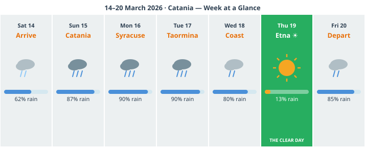
*A seven-column calendar grid, Sat 14 to Fri 20 March. Each cell shows:
date, plan, rain probability (shown as a weather icon: heavy cloud / light
cloud / sun), and one-line strategy note. Thursday clearly marked as the
sunny anomaly. The rain pattern (heavy Sun–Wed, clear Thu, rain again Fri)
should be immediately readable at a glance. This is the page you check
every morning before deciding whether to adjust.*
Why this order: Thursday is the only clear day, so Etna gets Thursday.
Everything else was chosen and sequenced for its rain-resilience: Syracuse
on Monday (Ortigia works in rain, Paolo Orsi museum is fully indoors),
Taormina on Tuesday (go at 7am, do the theatre before the clouds settle,
use the Corso and indoor shops for the afternoon), coast on Wednesday
(Aci Castello in rain is dramatic; Acireale is fully manageable in wet).
Sunday is the deep Catania day — the city's indoor riches are substantial,
and a rainy Sunday in the fish market and the Benedictine Monastery is a
genuinely excellent day.
On the grandparents throughout: the flattest and most comfortable
days for them are Sunday in Catania (piazza, cathedral, monastery — all
manageable), Monday in Ortigia (the smoothest streets of any day trip),
and Wednesday on the coast (flat waterfront promenade). Taormina
involves some uneven stone at the theatre — manageable, not demanding.
Etna is the day that needs the most thought, and the split approach
(Rifugio Sapienza terrace + cable car for the younger adults) is the
honest solution.
Check the forecast daily. The percentages will shift. But the logic holds:
protect Thursday for Etna no matter what, and let everything else flex
around the weather as it comes.
Next: Chapter 5 — Day Trip: Mt Etna
Chapter 5: Day Trip — Mt Etna
*"Etna is not a mountain with a volcano in it. Etna is the volcano.
The mountain is just what happens when a volcano has been erupting
in the same place for half a million years."*
You can see Etna from the city. On a clear morning, standing at the
north end of Via Etnea, you look up the long straight avenue and there
it is — filling the end of the street like a painting of itself, the
summit trailing a thin white plume of steam and gas against the blue sky.
It has been doing this for as long as there have been people in Catania
to look at it.
This is the most extraordinary thing about Etna: it is not remote. It
is not a volcano you fly to see. It is the backdrop to daily life for
the entire east coast of Sicily. Catanesi grew up looking at it. Farmers
grow wine grapes and pistachios on its slopes. Villages have been built,
buried, evacuated, and rebuilt on its flanks for three thousand years.
The locals have a relationship with the mountain that is less about awe
and more about coexistence — the volcano is a neighbour, not a spectacle.
You are going to visit your neighbour.
5.1 Understanding the Volcano
Etna is the largest active volcano in Europe: 3,357 metres at the summit,
covering approximately 1,190 square kilometres of the eastern Sicilian
landscape. It has four summit craters, all of which can be active
simultaneously, and dozens of secondary vents scattered across the flanks.
It erupts with some regularity — sometimes mildly (a quiet lava flow, a
plume of ash), sometimes dramatically (the eruptions of 2001 and 2002 were
significant enough to threaten the cable car infrastructure and close roads).
This is not alarming. Etna is a well-monitored, well-studied volcano and
the authorities take no chances with public safety — the cable car and
summit access are closed if there is any real risk to visitors. If you
are able to go up, it is safe to go up. What you will find there is
not danger but strangeness: a landscape of frozen lava flows, steaming
craters, and mineral-stained rock in colours — ochre, red, white, black —
that seem to belong to a different planet.
The slopes tell the story of centuries of eruptions in their landscape.
The lower flanks are green and fertile — the volcanic soil is extraordinarily
rich, which is why the wine and the pistachios and the honey from Etna are
so distinctive. As you climb, the vegetation thins and then stops. Above
2,000m it is bare rock, snow in winter and spring, and the wind. Above
2,500m — where the cable car takes you — it is another world entirely.
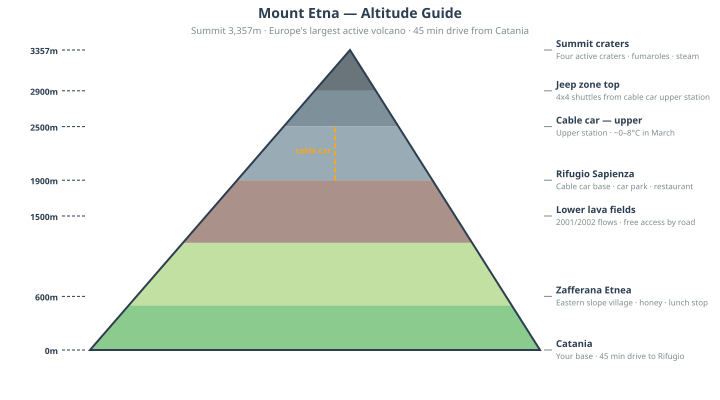
*A clean illustrated cross-section of the volcano from base to summit,
showing altitude bands and what exists at each level: lower slopes
(citrus, vines, villages), mid slopes (pine forest, ski runs, lava
fields from 2001/2002), upper mountain (bare lava, snow, fumaroles),
summit zone (craters, steam, the 4x4 jeep zone). Include: altitude
markers, the cable car line and its start/end points, the four summit
crater positions. Style: illustrated rather than technical — this should
feel like an adventure map, not a geology diagram.*
5.2 Getting There
From central Catania, the drive to the cable car base station takes
about 45 minutes. The route goes south through the city and then turns
inland, climbing through the outer suburbs and into the lava landscape
of the southern slope. The road through Nicolosi — the main gateway
village on the south side — is well-signed. From Nicolosi to **Rifugio
Sapienza** (the cable car base, at around 1,900m) is a further 15
kilometres of winding mountain road that narrows as it climbs.
The car park at Rifugio Sapienza is large and generally manageable in
March, before the main tourist season. In July and August it fills early —
another reason the timing of your trip works in your favour.
Driving notes for this route:
The approach road from Nicolosi to Rifugio Sapienza is winding, with hairpin bends. Not technically difficult, but takes longer than the map suggests — add time.
There is a toll on the A18 motorway if you use it to leave Catania southward; the alternative is the state road through the suburbs, slower but free.
Fuel up before leaving Catania. There is no petrol station at altitude.
5.3 Your Options on the Mountain
There is no single right way to visit Etna. The right way depends on
how high you want to go, how much you want to spend, and how much
the toddler is going to cooperate with being carried at altitude in
the cold. Here are the three honest options:
Option A: Cable Car + 4x4 Jeep (Recommended)
The Funivia dell'Etna runs from Rifugio Sapienza (1,900m) to the
upper mountain station at around 2,500m. The journey takes roughly
15 minutes each way and the views from the cable car — looking back
down over the lava fields and the Sicilian coastline — are themselves
worth the ticket.
From the upper cable car station, authorised 4x4 jeep shuttles take
visitors up to approximately 2,900m, to the area around the summit
craters. This is the jeep ride that most visitors remember: rough
lava terrain, the vegetation entirely gone, the crater rims visible
above you, the whole of eastern Sicily spread below. The experience
at 2,900m — the crater views, the steam, the sulphur smell, the lunar
texture of the lava — is unlike anything on the rest of this trip.
Practical notes:
Book the cable car online in advance, especially in spring and summer. In March it may be fine without booking; check the official Funivia website before you go.
The jeep shuttles run from the upper cable car station independently and can be booked or joined at the top.
The round trip (cable car + jeep) typically takes 3–4 hours from Rifugio Sapienza.
The pushchair does not go above the cable car base station. Leave it folded in the car or at the base. From the cable car onward, the toddler goes in the carrier.
At 2,900m, the wind is real and the temperature is genuinely cold. Dress accordingly — warm layers for the whole family, regardless of what the weather in Catania was doing that morning.
Option B: Guided Tour from Catania
Multiple operators run half-day and full-day tours from Catania to Etna.
These typically involve minibus pickup from a central meeting point,
a guide, and either the cable car or access to the lower mountain via
jeep track. Some include tastings at Etna wineries on the descent.
The advantage: zero logistics. Someone else figures out the parking,
the cable car queues, the jeep timing. The guide provides context that
makes the landscape much more readable — having someone explain what
you're looking at, which lava flow is from which eruption, why the
rock is that colour, makes the experience significantly richer.
The disadvantage: you're on someone else's schedule, which with a
toddler can be complicated.
Who this works for: families who want to focus on the experience
rather than the logistics, or who find the mountain-driving prospect
stressful. A good guide makes Etna considerably more than a cable car
ride and some rocks.
Option C: Drive Up and Walk the Lava Fields (Free)
This is the undersung option that most guides don't mention because
it doesn't involve any bookable products.
The lava flows from the significant eruptions of 2001 and 2002 are
visible and accessible from the road that climbs toward Rifugio Sapienza.
You can pull over, walk into the lava fields, and spend an hour exploring
frozen rivers of black rock, lava tubes, and the eerie landscape of a
recent eruption — all for free, at around 1,500–1,800m altitude, well
within the range of a toddler on foot or in a pushchair on reasonable
terrain.
This is not the summit experience. You are not seeing craters or steaming
fumaroles at close range. But the scale of the lava flows — the sheer
volume of rock that moved down this slope in a matter of days — is
extraordinary, and the landscape at this altitude already feels genuinely
alien. For families with a toddler who is too young to appreciate the upper
mountain, and for budget-conscious travellers, this is a real and valid way
to experience Etna.
5.4 What It's Actually Like Up There
The cable car departs from the edge of the Rifugio Sapienza car park.
The lower section ascends through a landscape of old lava flows and
scrubby vegetation; the upper section leaves the vegetation behind
entirely and moves through bare, wind-scoured rock. By the time you
reach the upper station, the world below — Catania, the coast, the
curve of the island — is laid out at a scale that makes you recalibrate
how much ground you've covered since this morning.
The temperature at 2,500m in March will likely be somewhere between
0°C and 8°C, with wind making it feel colder. This is not extreme,
but it is sharp — the contrast with the warmth of the city is significant
and you will feel it immediately. The layers you brought become essential
within about 90 seconds of stepping off the cable car.
The smell arrives next: sulphur, faint but unmistakable, drifting down
from the vents above. It is the smell of the earth being actively
geological. Your toddler will make a face about it.
On the jeep ride up to 2,900m, the terrain is what most impresses adults
on first visit: the lava is not flat. It is buckled, twisted, ropy,
and in some places still warm to the touch near fumaroles. The surface
looks like a bad special effect — too dramatic to be real, too rugged
to be entirely safe-feeling. It is, in fact, quite safe. Walk carefully,
watch your footing, hold the toddler's hand when out of the carrier.
At the summit zone, the craters are close enough to be genuinely involving.
Steam and gas rise from the vents. The rock around the active vents is
stained yellow with sulphur deposits, red with oxidised iron, white with
mineral crusts. The colours of the Etna crater zone are extraordinary and
appear in almost no photographs with accurate saturation — the camera tends
to underexpose the brightness and flatten the colour range. See it with
your own eyes.
On a clear day from 2,900m: to the east, the Ionian Sea and the straight
of Messina, with Calabria on the Italian mainland visible across the water.
To the south, the full length of the Sicilian east coast stretching toward
Syracuse. To the west and north, the interior mountains and, on very clear
days, the shape of the Aeolian Islands in the sea beyond. The scale of
the view is not something that photographs convey. It just isn't.
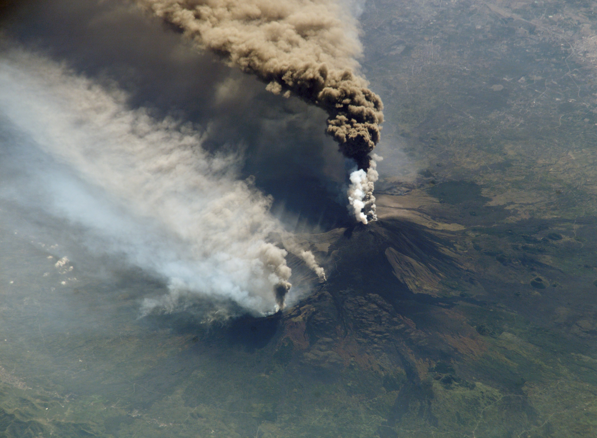
*Shot 1: A boot or hand on lava rock to give scale — ideally showing the
texture of the ropy lava (pahoehoe type) up close. Shot 2: Steam rising
from a fumarole, backlit if possible, with the blue sky above. Shot 3: The
view from the upper mountain looking south over Catania and the coast —
the city visible as a white smear on the edge of the dark coast, the sea
beyond.*
5.5 The Villages on Etna's Slopes
The volcano is not just a geological event. It is a place where people
live — in villages perched on its flanks, farming its extraordinary
soil, making wine from vines that grow in volcanic earth at altitude
and produce grapes unlike anything else in Italy.
Zafferana Etnea — on the eastern slope, about 600m altitude. This
is the honey capital of Etna. The bees work the wildflowers and chestnut
blossoms of the mountain and produce a range of honeys that are intensely
flavoured and worth buying. The village has a good bar for a coffee and
cornetto stop, and an unhurried atmosphere that makes it a pleasant break
from the summit experience.
Nicolosi — the main gateway town on the south side, at 700m. The
last proper town before the road climbs seriously. Good for a final
fuel stop (petrol and breakfast both), with a bar culture that serves
Catanesi heading up for the day. Nothing spectacular to see, but a
comfortable and real Sicilian mountain town.
Bronte — on the northwestern slope, accessible as a longer excursion
or a detour if you approach Etna from the north side. This is the home
of the Pistacchio di Bronte — the DOP-protected pistachio that appears
in everything from pasta to gelato to pastries throughout the region and
that, if you've been eating it all week, you now know is one of the great
flavours of Sicily. The green of the Bronte pistachio is extraordinary —
a deep, saturated, almost jewel-like green that looks artificial and is
entirely natural. The harvest is in autumn; in spring, the trees are in
flower. Worth a dedicated trip if pistachios have become your thing over
the course of this week, which they almost certainly have.
A note on Etna wine: The vineyards on Etna's slopes — particularly
on the northern side, around the town of Randazzo — are producing some
of the most interesting wine in Italy right now. The volcanic soil, the
altitude, and the old vine varieties (Nerello Mascalese for red, Carricante
for white) produce wines that are perfumed, mineral, and unlike anything
from mainland Italy. Etna Bianco in particular is having a global moment
— sommeliers in London and New York are extremely excited about it. You can
drink it for a fraction of the export price at any enoteca in Catania, and
you should. Several Etna wine estates offer tastings; if a winery visit
interests you, build it into the Etna day on the way down, when the mountain
driving is done and a glass of something local feels exactly right.
Next: Chapter 6 — Day Trip: Taormina
Chapter 6: Day Trip — Taormina
*"Taormina is the most beautiful place in the world," wrote Maupassant
in 1885. He was exaggerating slightly. But only slightly.*
Let's be honest about Taormina before we go any further: it is both
extraordinary and extremely touristy. These things coexist. The town has
been on every Grand Tour itinerary since the 18th century. It was the
preferred retreat of writers, artists, and aristocrats for two centuries.
D.H. Lawrence lived here. Truman Capote visited. Marlene Dietrich. The
Taormina Film Festival has been running since 1955. The town has been
looking good at its own reflection for a very long time and knows it.
In July and August, this means Taormina is genuinely overwhelmed —
the narrow streets clogged, the restaurants overpriced, the queue for
the Greek theatre stretching back down the hill. In March, it is a
different proposition. The cruise ship tourists are not yet in season.
The town breathes. You can stand in the Greek theatre with the view to
yourself for a moment, and that moment is one of the genuinely remarkable
things you will do this week.
Go. Just go early and come back before the afternoon rush.
6.1 Why Taormina is Famous
The town sits at 250 metres on a clifftop spur of Monte Tauro, with the
Ionian Sea directly below on one side and the valley — and Etna — on the
other. The position alone would be enough to justify the reputation. But
Taormina has the Greek theatre as well, and the combination of the ancient
theatre with the view is, without much competition, the single most dramatic
scenic moment on the Sicilian east coast.
The Teatro Greco-Romano was originally built by Greek colonists in the
3rd century BC — it is one of the largest Greek theatres in Sicily, after
Syracuse. The Romans, characteristically, modified it substantially: they
raised the stage building, changed the orchestra level, and adapted it for
gladiatorial combat and spectacle. What remains is a hybrid that somehow
still reads as classical. And the original Greek architects chose the site
with an eye for staging that has never been surpassed: the backdrop to the
stage is the sea, and behind the sea, on a clear day, Etna.
This was intentional. Greek theatre was a civic and religious act, and the
Greeks who sited this theatre understood that placing drama against the
scale of the sea and a smoking volcano was itself a dramatic statement.
It still works. Two thousand years later, standing in the upper tiers
of the seating on a clear March morning, looking at the stage framing
the sea and the mountain beyond, it still absolutely works.
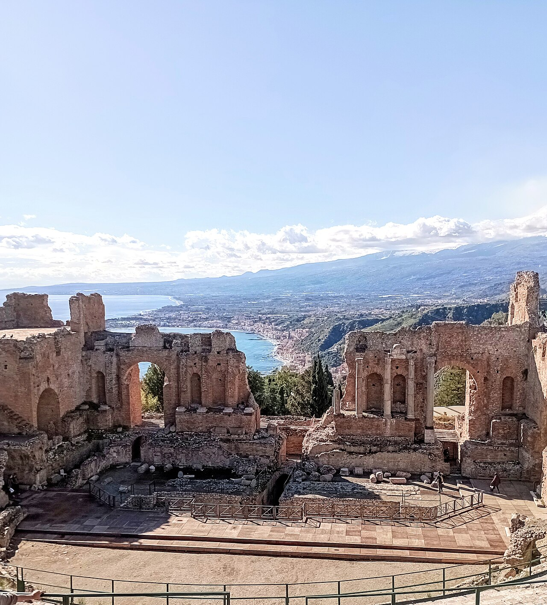
*The definitive shot: from the upper seating tiers looking toward the stage,
with the sea visible through the stage arch and Etna in the background (ideally
with the summit plume). Shoot in the morning — the light comes from the east,
the sea is lit, and Etna is clearest before the afternoon haze builds. This
is the single most iconic photograph of the whole trip.*
6.2 Getting There
From central Catania, the drive north on the A18 motorway takes
about 50 minutes. The motorway follows the coast — the sea to your right
most of the way, the Etna massif building behind you as you leave the
city. The drive itself is pleasant, with two or three tunnel sections cut
through the coastal headlands. There is a toll; keep coins or a card
accessible.
The parking question is the key logistical issue for Taormina.
The town is not accessible by car — or rather, you cannot drive into
the town itself without local permits, and even the approach roads are
narrow, one-way in sections, and stressful if you don't know them.
The solution is straightforward:
Park at Mazzarò, at the base of the cliff, immediately below Taormina.
The car parks here are large, well-signed from the motorway exit, and
directly adjacent to the lower cable car station. This is where you park.
Always.
From Mazzarò, the cable car (funivia) takes you up to the edge of
town in a few minutes — small, frequent, cheap, and the views going up
give you your first proper sense of Taormina's position. The cable car
runs regularly and the queues in March should be short.
One alternative parking option if Mazzarò is full or closed for any
reason: Lumbi car park, higher on the approach road and accessed from
the north side — this puts you closer to town but involves more walking on
uneven roads. Mazzarò is the better choice for a family with a pushchair.
From the cable car station at the top, you enter the town via a short
walk up through the gardens. The main street — Corso Umberto — begins
here and runs the length of the town from one end to the other.
6.3 The Must-Sees
The Greek Theatre
Go here first. Immediately. Before the café, before the Corso, before
anything else. The theatre opens at 9am (or earlier in some seasons —
check in advance) and the early morning, before the tour buses arrive,
is the only time you will have it to yourself.
What to do inside: buy your tickets at the entrance, walk through
into the theatre, and then do not stop at the lowest level. Walk up the
seating tiers — there are steps to either side — until you reach the
upper rows. Sit down. Look at the view for at least five minutes before
you look at the theatre itself.
The view from the upper tiers is the reason the theatre was built where
it was built. The stage arch frames the sea; the sea is framed by the sky;
and Etna, on a clear March morning, fills the northern horizon behind and
above the whole composition. The scale is such that the ancient architecture
and the geology seem to be participating in the same design.
Then look at the theatre itself. The Roman stage building — partially
restored, still massive — gives a sense of the spectacle that was staged
here. The semicircular seating, cut into the hillside in the Greek manner.
The orchestra level. The whole geometry of the space, which directs your
eye back to the view at every turn.
Stroller note: the entrance is manageable at ground level. To reach
the upper tiers, there are steps. Carry the toddler up; leave the pushchair
at the lower level or fold it at the entrance. The extra effort is worth
it — the view from the upper tiers is the whole point.
Time to allow: 45 minutes to an hour, if you're being honest. You
will stay longer than you plan to.
Villa Comunale (Public Gardens)
At the eastern end of the Corso Umberto, beyond the theatre, the public
gardens designed by Lady Florence Trevelyan in the late 19th century
offer an entirely different kind of Taormina experience. Lady Trevelyan
was English, eccentric, and passionate about botany — she filled the
gardens with exotic plants collected from her travels, built several small
fantasy pavilions (one of which looks like a birdcage crossed with a Swiss
chalet), and created a space that somehow manages to be both genuinely
beautiful and mildly ridiculous at the same time.
The gardens have sea views from the eastern edge — on a clear day you can
see south toward Catania and north toward the Strait of Messina. There are
paths wide enough for a pushchair, benches in the shade, and enough open
space for a toddler to run without disappearing over a cliff.
Good for: the nap window, if the timing works. A bench in the shade
of the gardens with the sea below is a very good place to sit while the
child sleeps in the pram.
Piazza IX Aprile
Midway along the Corso Umberto, Piazza IX Aprile opens to the south as
a broad terrace over the valley. This is the view that appears on every
Taormina postcard — the coastline stretching south, Etna behind it, the
sea below, the town framing it all. There is a café on the square; you
should have at least one drink here, on the terrace, looking at this view.
The piazza also has the clock tower (Torre dell'Orologio), which marks
the original entrance to the medieval town, and the church of Sant'Agostino
(now a library). None of this competes with the view, and none of it
needs to.
The Corso Umberto
The main street runs the full length of the town, mostly pedestrianised,
and is the central artery of Taormina life. In tourist season it is a
gauntlet of souvenir shops, ceramics stalls, linen displays, and restaurant
touts. In March it is considerably calmer.
There are genuinely good things among the shops: Caltagirone ceramics
(the traditional yellow and blue Sicilian style — excellent and packable),
quality linen and embroidery, local food products (pistachio cream, Marsala
wine, dried herbs). The art is to identify the shops that are selling
something real rather than something made in a Chinese factory with a
Sicilian flag on the box. Price is usually the guide: if the pistachio
cream is suspiciously cheap, it probably contains approximately 8%
pistachio.
The best gelato in Taormina is not in the obvious places on the Corso.
Ask at a bar for where the locals go. Alternatively: granita con brioche
at any bar that has queuing Italians rather than tourists — the granita
in Taormina is good, the mulberry flavour in season is exceptional.
Stroller note: the Corso itself is paved and manageable. The side
streets stepping down from the Corso are often steep stone steps — the
town is on a cliff and the terrain is unforgiving of anything with wheels.
Keep to the Corso and the theatre for pushchair use; carrier for exploration
beyond.
6.4 Eating in Taormina
The honest answer: eating in Taormina costs more than eating in Catania,
and the quality does not always justify the premium. The best strategy:
Avoid the restaurants that face directly onto the main piazzas. They
are good at marketing themselves and feeding large numbers of tourists
efficiently. They are not always good at feeding you well. The restaurants
in the streets just behind the Corso — one alley back, slightly harder to
find — are where the better food happens.
Lunch rather than dinner. You are driving back to Catania in the
afternoon. A good lunch at a table with a view is the right Taormina meal.
Dinner in a tourist town at tourist prices is the wrong one.
What to order: fresh grilled fish is the right call. The swordfish
(pesce spada) on this part of the coast is excellent. Pasta with clams
or mussels. Arancino as a starter if you haven't had one yet today.
If budget is a concern: the town has a small alimentari and a
supermarket that are much harder to find than the restaurants. A picnic
in the Villa Comunale — bread, local cheese, tomatoes, blood oranges,
something sweet — is a legitimate and enjoyable Taormina lunch and costs
a fraction of a sit-down meal.
6.5 Honest Notes
The crowds in March are manageable. In May, already beginning to
build. July and August: genuinely overcrowded in a way that diminishes
the experience significantly. You are going at the right time of year.
The cable car can have queues in peak season. In March, walk-up is
usually fine. Check the Funivia Taormina website for the current season
schedule before you go, as hours vary.
The weather matters more in Taormina than in the valley. Being on
a clifftop at 250m means the wind can be significant even on a warm day —
bring a light layer. The view is also much more variable in cloud or mist;
a misty day in Taormina is still beautiful but the famous view collapses
into grey. In light rain, the town is lovely and far quieter; heavy rain
is worth postponing for.
Coming back: leave Taormina by 3:30–4pm to avoid the early evening
traffic on the A18 southbound toward Catania. The motorway can be slow
around Giarre-Riposto junction; if traffic is visible, the state road
along the coast (SS114) is a scenic alternative and runs parallel all
the way back.
A historical footnote worth knowing: Taormina in the late 19th
and early 20th centuries was one of the first places in Europe where
gay men could live relatively openly — the combination of Italian
tolerance, distance from northern European social norms, and the
bohemian artistic community created an unusual pocket of freedom.
The German photographer Wilhelm von Gloeden documented Sicilian youth
here in the 1890s in photographs that are still exhibited in the town.
The writer and traveller Norman Douglas wrote about Taormina with
knowing enthusiasm. The town has always attracted people seeking
a life lived differently. It is part of the cultural texture of the
place, and worth knowing.
Next: Chapter 7 — Day Trip: Syracuse & Ortigia
Chapter 7: Day Trip — Syracuse & Ortigia
*"Syracuse is the greatest of all Greek cities, and the most beautiful
of all." — Cicero, 70 BC*
Cicero was not a man given to casual exaggeration, particularly on legal
matters, which is essentially what the quote above comes from — he was
presenting a legal case about the city's looted art, which required him
to establish that Syracuse was worth caring about. He had no difficulty
making that argument.
Neither will you.
Syracuse is the day trip that rewards the most preparation and the most
time. It is not a quick stop — it is a city that has been continuously
inhabited and continuously significant for nearly three thousand years, and
the weight of that history is visible in its stones in a way that most
ancient sites only hint at. The old town of Ortigia is simultaneously one
of the finest baroque centres in Sicily and an island where the streets
run on top of Greek city planning from the 5th century BC. The archaeological
park on the mainland contains a Greek theatre and a Roman amphitheatre and
a cave named by Caravaggio, all within a ten-minute walk of each other.
Give it a full day. Leave early. Come back late.
7.1 Why Syracuse Matters
Founded by Corinthian Greeks in 734 BC, Syracuse grew to become one of
the most powerful cities in the ancient Mediterranean world. At its peak,
in the 5th and 4th centuries BC, it was larger than Athens. It was one
of the great centres of Greek culture, philosophy, and military power.
The Athenians sent their entire naval expeditionary force to capture it
in 415–413 BC — the largest amphibious operation in the ancient world up
to that point, with 200 ships and 40,000 men. Syracuse defeated them.
The Athenian general Nicias was executed. The soldiers were worked to
death in the stone quarries outside the city that you will visit this
morning. This defeat contributed significantly to Athens' decline and the
eventual end of its golden age. That is the scale of what happened here.
Archimedes was born in Syracuse around 287 BC. He spent most of his
life here. The screw pump, the principle of water displacement (the bath,
the shouting of Eureka), the calculation of pi, the lever principle —
all developed here. He was killed by a Roman soldier during the sack of
Syracuse in 212 BC, reportedly while working on a mathematical problem.
He asked the soldier not to disturb his circles.
Cicero, as we noted, prosecuted Verres for looting the city in 70 BC
and described it as the most beautiful city he had seen.
Caravaggio fled to Syracuse in 1608 after killing a man in Rome and
spent several months here, producing some of his greatest late works and
reportedly naming the cave you'll see this morning.
This is the density of history that Syracuse contains. Not a backdrop,
not a ruin to photograph — a place where things happened that changed
the world.
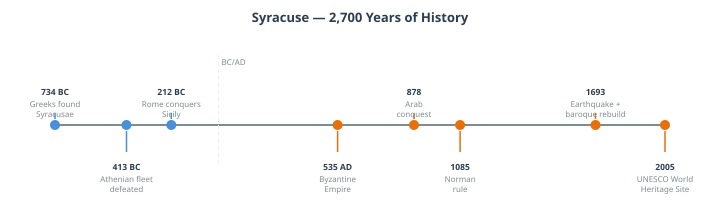
*A horizontal timeline running from 734 BC to the present, marking key
moments: Greek founding, the Athenian siege, Archimedes (287–212 BC),
Roman capture (212 BC), Byzantine period, Arab rule (878–1085 AD), Norman
Norman reconquest, the 1693 earthquake and baroque rebuild, UNESCO listing
(2005). Style: illustrated, warm colour palette, specific named events
with short descriptions. Should feel like a story, not a history textbook.*
7.2 Getting There
From central Catania, take the A18/A19 motorway south. The drive is
approximately one hour — straightforward motorway driving along the coast
and then inland. The motorway is well-signed for Siracusa.
Parking in the Syracuse area is best managed by splitting the day between
the two main sites:
Morning parking for the Neapolis Park: there is a car park at the
entrance to the Parco Archeologico della Neapolis on Viale Paradiso.
It fills up in high season; in March you should be fine arriving by 9am.
From here you walk directly into the archaeological park.
Afternoon in Ortigia: when you move from the park to the island,
parking is available on the bridge approach and on the Via Nizza waterfront.
Alternatively, the walk from the Neapolis park to Ortigia is about
15 minutes — a perfectly reasonable transition on foot, and it takes you
through the modern city centre, which has its own character.
7.3 The Neapolis Archaeological Park
Allow two to three hours here, depending on your pace and the toddler's
cooperation. The park is large and open-air; in March the weather is
generally kind, and the light on the limestone is beautiful in the morning.
Buy a ticket at the entrance (a combined ticket including the Paolo Orsi
Archaeological Museum nearby is usually available and worth considering
if you want to add the museum in the afternoon or on a rainy day).
The Greek Theatre
The theatre of Syracuse is one of the finest surviving Greek theatres
anywhere in the world. It dates to the 5th century BC in its original
form, though it was substantially modified in later centuries. The scale
is extraordinary — 138 metres in diameter, with seating cut directly into
the limestone hillside of the Temenites hill. In its heyday it held up
to 15,000 spectators.
Aeschylus — the father of Greek tragedy — staged world premieres of
his plays here at the invitation of the tyrant Hieron I. The Persians
may have had its first performance in this theatre. The plays of Sophocles
and Euripides were performed here while their authors were alive to see it.
The theatre is still used for performance. The INDA (Instituto Nazionale
del Dramma Antico) runs a Greek theatre festival here in alternating years
(odd-numbered years), staging Greek and Latin drama in the original space.
If your visit happens to coincide with a performance season (typically
May–June), tickets for an evening performance are an extraordinary
experience.
In March, the theatre is quiet and mostly yours. Sit at the top of the
seating bank. Look at the orchestra, the stage, the sky above. Consider
that what you are sitting in is not a monument to Greek culture — it is
Greek culture, still intact and occasionally still in use.
The Roman Amphitheatre
Immediately adjacent to the Greek theatre, the Roman amphitheatre was
built in the 3rd century AD — more than 700 years after the Greek
theatre beside it. The proximity of the two structures makes the contrast
inescapable: the Greeks cut a theatre for drama and poetry into a hillside;
the Romans built an oval arena for blood sport into the earth of the same
site. Both are extraordinary. The moral contrast between what each civilisation
chose to build for public entertainment is something to turn over in your
mind as you walk between them.
The Roman amphitheatre is one of the largest in Italy outside Rome — larger
than the arenas at Verona and Capua. It is less complete than the Greek
theatre (much of the stone was cannibalised for building material in later
centuries), but the scale is still evident, and the underground passage
system used to move animals and fighters into the arena is partially
accessible and genuinely eerie.
The Ear of Dionysius
This is the one that captures the imagination of everyone who visits,
including children.
The Latomia del Paradiso — the ancient limestone quarry that supplied
the building stone for much of Greek Syracuse — is a dramatic space: a
deep trench cut into the rock, open to the sky, with vegetation growing
down the walls and an atmosphere of improbable tranquillity given that it
was once a quarry and later a prison. The Athenian prisoners captured in
the failed 415 BC siege were put to work here. According to Thucydides,
the conditions were appalling.
At the back of the quarry, cut into the cliff face, is the **Ear of
Dionysius** — a tall, narrow artificial cave approximately 65 metres deep,
shaped in cross-section like a human ear. The acoustic properties of the
cave are extraordinary: a whisper at one end is amplified and audible at
the other with startling clarity.
The name was given by Caravaggio during his visit to Syracuse in 1608.
The legend — enthusiastically promoted then and now — is that the tyrant
Dionysius I of Syracuse used the cave as a prison and could hear his
prisoners' conversations through the acoustic properties of the rock from
a listening point at the top. This is probably not literally true as a
historical fact. It is, however, a wonderful story, and the acoustic
effect is real and remarkable regardless of origin.
Take the toddler to the far end of the cave and whisper. This is
a legitimate use of 2,300 years of architectural history.
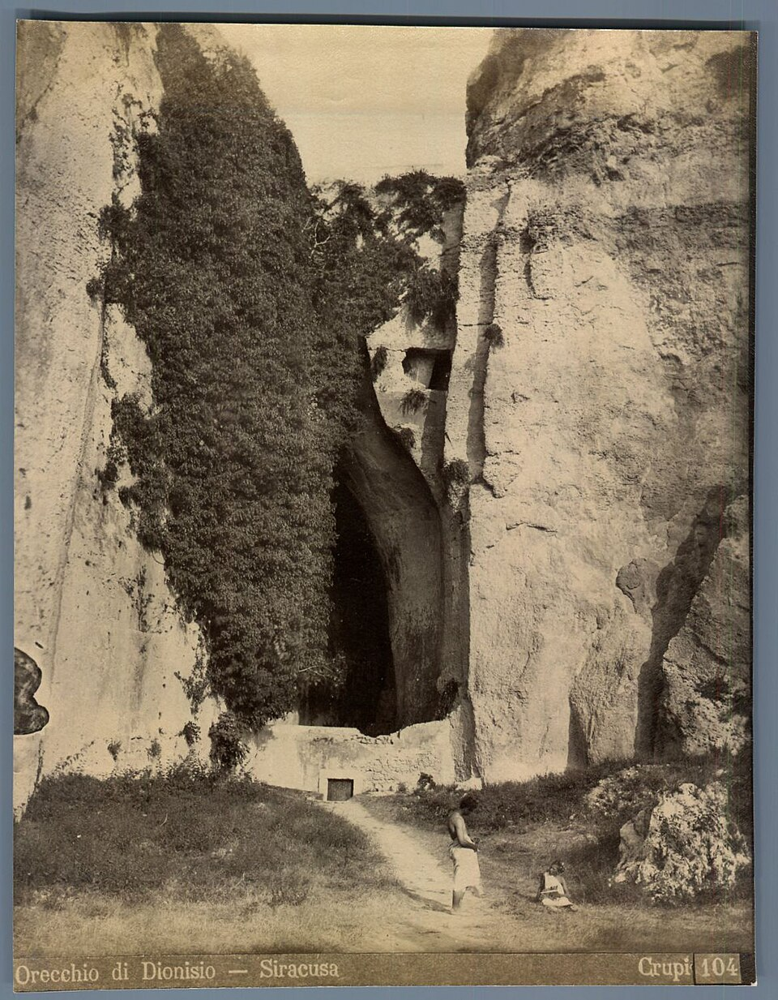
*Looking from inside the cave back toward the entrance — the tall narrow
opening framing daylight against the dark interior, the curved limestone
walls converging toward the apex. If possible: a figure in the foreground
for scale, showing the height of the cave. The geometry of the space is
what makes the photograph.*
The Altar of Hieron
Adjacent to the theatre and quarry, the Altar of Hieron is a long, low
platform — essentially all that remains of what was once the largest altar
in the ancient world. Hieron II built it in the 3rd century BC to sacrifice
to Zeus Eleutherios; the sacrifices conducted here reportedly involved
450 oxen at a time. The altar stretched 198 metres in length.
What you see today is the base — the stone superstructure was demolished
in the Spanish period and the material reused. The sheer length of the
platform, however, conveys the ambition of the original: nearly 200 metres
of carved limestone, longer than the Parthenon is wide. Worth the short
walk for a moment of scale.
[STROLLER NOTE] The Neapolis park has a mix of paved paths and gravel
surfaces. The main routes between the theatre, the amphitheatre, and the
quarry are manageable with a pushchair with care. The Ear of Dionysius
cave itself is flat-floored and accessible, though you may want to fold
the pushchair at the cave entrance to navigate the narrow interior more
easily. A carrier for the toddler gives more flexibility throughout.
7.4 Ortigia — The Island Old Town
Cross to Ortigia by car (10-minute drive) or on foot (15–20 minutes).
The island is connected to the mainland by two short bridges; you will
know you've arrived when the streets narrow and the stone changes from
modern concrete to baroque pale limestone.
Ortigia is a small island — roughly 600 metres by 1,000 metres —
but it has been continuously occupied since at least the 8th century BC
and contains more layers of history per square metre than almost anywhere
else in Sicily. The street plan still loosely follows Greek city planning.
The buildings are largely baroque, rebuilt after the 1693 earthquake.
The substrate below is Greek, Roman, Byzantine, Arab, and Norman, in rough
sequence.
The Cathedral of Syracuse
The cathedral stands on the highest point of the island, on the site of
the most important Greek temple in Syracuse — the Temple of Athena,
built in the 5th century BC after the Syracusan victory over the
Carthaginians at the Battle of Himera.
The temple was converted to a Christian church in the 7th century AD.
The nave of the cathedral is the interior of the temple. The outer walls
of the cathedral incorporate the original Doric columns of the temple,
still standing in their original positions, still load-bearing, now
embedded in the baroque masonry. You can see them from the street on
the north side of the building — a row of fluted limestone columns, 5th
century BC, doing what they have been doing for 2,500 years.
Inside, the cathedral reads as an extraordinarily layered space: Greek
columns forming the side aisles, Byzantine mosaics partially preserved in
the nave (mostly covered by later decoration), Norman remains, baroque
chapels added in the post-1693 reconstruction. The whole building is a
compressed history of Western civilisation arranged in three dimensions.
This is free to enter. Go inside. Stand in the nave and look up at the
ceiling, then look sideways at the columns, then look back at the main
altar. Every surface is doing something different from a different century.
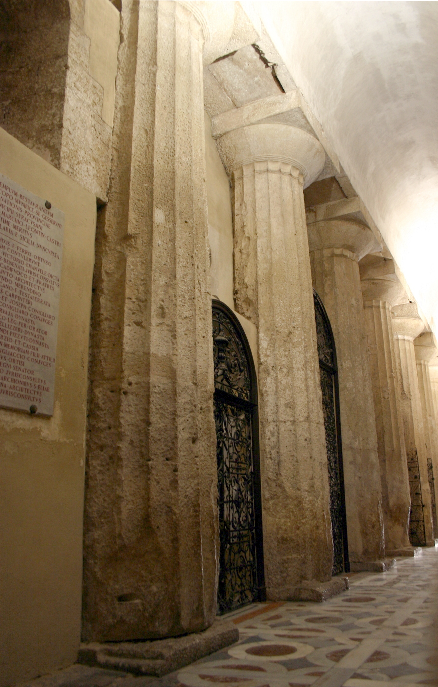
*Two angles worth capturing: the exterior north wall showing the columns
incorporated into the baroque masonry (best in morning light); and the
interior of the nave showing the columns forming the arcade, with the baroque
decoration above them. The contrast between the ancient stone and the later
ornamentation is the visual story.*
The Fountain of Arethusa
At the southern tip of the island, where the land ends at the edge of
the harbour, a freshwater spring bubbles up from the rock. This is the Fonte Aretusa — a spring that has been running since antiquity,
surrounded by papyrus plants (an Egyptian reed plant growing here in
the Mediterranean — already strange), and facing the open sea.
In Greek mythology, Arethusa was a nymph and huntress who attracted the
attention of the river god Alpheus. To escape him, she was transformed
into an underground river by the goddess Artemis and traveled beneath the
sea from Greece to Sicily, emerging here as a freshwater spring. Alpheus
followed her and his waters mingle with hers in the spring. The papyrus
plants are thought to have grown here since the time of the ancient
contact between Syracuse and Egypt.
The spring is real. The papyrus is real. The geographical impossibility
of freshwater emerging at the edge of the sea is real. The myth is one
of the great Greek explanatory stories — taking something genuinely
mysterious and giving it a narrative that is more satisfying than geology.
Sit at the fountain for a few minutes. The ducks that live here will
investigate your toddler. The sea is immediately below the wall. On the
far side of the harbour, the ancient city of Syracuse spreads out.
This is a place where the mythological and the actual are, unusually,
occupying exactly the same ground.
The Ortigia Covered Market (Via Trento)
Morning only — if you arrive before noon. A small, atmospheric market
selling fresh fish, vegetables, and local produce. The size and intensity
of La Pescheria in Catania this is not — the Ortigia market is compact and
quieter — but the quality is high and the setting, in a vaulted space just
off the main square, is characterful.
Good for: a mid-morning snack before lunch (the street food here is good — pane e panelle if available, or fresh arancino), and buying local capers,
dried tomatoes, or Sicilian spices to take home.
The Ortigia Waterfront
The Lungomare (waterfront promenade) runs along the eastern edge of
the island, facing the open sea. In the afternoon and evening, this is
where the aperitivo culture of Syracuse concentrates: bars with outdoor
seating, the light changing over the water, the boats in the small harbours.
Aperitivo here is the right way to end the Ortigia afternoon — a glass
of something local (Nero d'Avola, or a local spumante), a small plate of
olives and caponata, the sea in front of you and the baroque facade of
Ortigia behind. This is the moment that the day has been building toward.
*The eastern waterfront in late afternoon light — ideally including the
water, a section of the baroque buildings on the edge of the island, and
if possible the reflection of the light on the sea surface. Early evening
light on pale limestone is exceptional.*
7.5 Eating in Syracuse
The Ortigia market (morning) for street food.
Lunch in Ortigia: look for restaurants in the streets between Via
Maestranza and the cathedral — the lanes running inland from the main
waterfront have better value and better food than the obvious restaurant
strip along the lungomare. Ask for the catch of the day; this close to
the sea, in a fishing town, fresh fish is what you should be eating.
Arancino in Syracuse: the Syracuse arancino is notably different from
Catania's — round rather than conical, and the fillings can vary more.
Worth trying both during the course of the week and forming an opinion.
People in Catania and Syracuse have very strong opinions about whose is
better. You are allowed to have your own.
Budget note: Syracuse is somewhat less expensive than Taormina for
eating and slightly more than Catania. A good lunch in Ortigia for two
adults and a toddler, with drinks, should be in the €35–50 range in a
mid-level restaurant — more if you order greedily, less if you use the
market for part of the meal.
The Paolo Orsi Archaeological Museum — adjacent to the Neapolis
park, about 500m from the theatre entrance — is one of the most
important archaeological museums in Europe and is entirely worth the
visit, especially as a rainy-day alternative to the open-air park.
The collections cover prehistoric Sicily, the Greek colonisation, the
Roman period, and the subsequent civilisations, all with exceptional
quality of presentation. If you are going to see one museum on this
trip, this is the one. The toddler verdict: the Greek and Roman
sections have enough large dramatic objects (entire sculptural groups,
impressive ceramics, armour) to hold the attention for at least an hour.
Allow 2 hours for a proper visit.
Next: Chapter 8 — Day Trip: The Coast
Chapter 8: Day Trip — The Coast
"I faraglioni? Quelli li ha buttati il Ciclope."
"Those sea stacks? The Cyclops threw them."
— Every person in Aci Trezza, forever
After the cultural intensity of Syracuse and the altitude drama of Etna,
the coast day exists as a corrective. It is the easiest, most restorative
day of the week. The plan is: drive 20 minutes, eat fish, look at mythological
sea stacks, let the toddler run at the water's edge, eat gelato, drive back.
That is the entire agenda. There is no subtext.
The Riviera dei Ciclopi — the Cyclops Riviera — is the stretch of coastline
immediately north of Catania, named for the legend that the extraordinary
black basalt sea stacks off Aci Trezza are the rocks that the blinded Cyclops
Polyphemus hurled at Odysseus. It is one of the more dramatically named
coastlines in the Mediterranean, and it earns it: the sea stacks are
genuinely extraordinary, rising straight out of turquoise water in columns
that look hand-placed rather than geological. They are not, in fact, hand-placed
by a giant. They are lava intrusions from an ancient eruption, harder than the
surrounding rock and thus left standing when everything around them eroded.
But the Cyclops story is better, and the coastal residents of Aci Trezza have
been telling it for at least 2,700 years.
8.1 The Myth
Book IX of Homer's Odyssey. Odysseus and his men, on the way home from
Troy, make landfall near a cave they don't immediately recognise as the
home of a Cyclops. They go inside. The Cyclops — Polyphemus — comes home
with his sheep, rolls a boulder across the entrance, and eats two of
Odysseus's men. Odysseus gets him drunk on wine, blinds him with a sharpened
stake while he sleeps, escapes from the cave hidden under the bellies of the
sheep, and puts to sea.
Polyphemus, blind and enraged, hears Odysseus taunting him from the boats
and hurls the tops of mountains at the sound of his voice. Two of them land
near the ships. The sea stacks visible from the harbour of Aci Trezza today
are, in the story, those rocks. The largest — the Isola Lachea — became
over time an actual island, inhabited, farmed, and now a protected marine
reserve.
What is interesting about this, beyond the beauty of the myth, is that the
Homeric tradition was clearly mapping real geography. The rocks exist. The
coastline exists. Someone, at some point in the Greek literary tradition,
looked at these black basalt sea stacks rising out of the sea north of
Syracuse and thought: that is where the Cyclops threw the rocks. Once you
see the rocks in person, you understand immediately why the story attached
to them and not somewhere else.
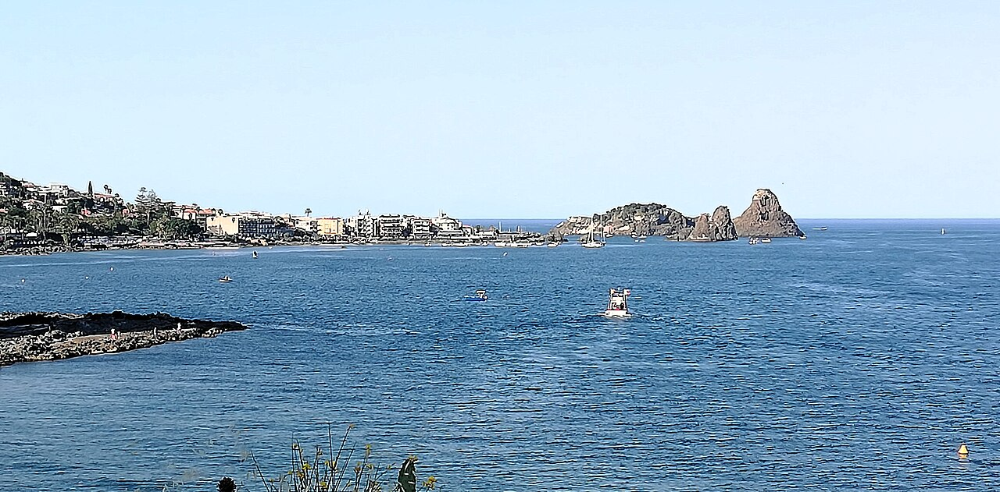
*Looking from the village harbour or the waterfront toward the sea stacks —
Polyphemus's rocks in the foreground, the sea between, the rocks rising.
Best in morning light (east-facing coast). Aim for a low angle from the
waterfront to get the height of the columns in frame. Include the village
harbour if possible for context — the contrast of fishing boats and myth is
the visual point.*
8.2 Aci Trezza
Aci Trezza is a small fishing village about 15 kilometres north of
Catania — a 20-minute drive from the historic centre, depending on traffic
through the northern suburbs. It is not a resort and not a tourist town in
any meaningful sense. It has a working harbour, a seafront, a handful of
excellent seafood restaurants, and the rocks.
The harbour area is the social centre of the village: fishing boats come
in and out in the morning, the catch is sold on the quay, and the bars
along the waterfront open early and stay open late. The atmosphere is
entirely local — Catanesi come here for Sunday lunch, not tourists on a
package holiday.
*Giovanni Verga's novel I Malavoglia*** — published in 1881 and one of
the great works of Italian verismo fiction — is set in Aci Trezza. The
novel follows a fishing family's decline over a generation, and the village,
the harbour, the culture of hard work and hard luck that Verga documents,
is all recognisable in the Aci Trezza of today. If you've read it, the
village will feel eerily familiar. If you haven't, the knowledge that this
place was significant enough to anchor one of the major novels of the Italian
literary tradition gives it a weight that the unprepared tourist misses.
The sea stacks — the Faraglioni di Aci Trezza — are visible from
the harbour. The main group includes the Scoglio Grande, the **Scoglio
di Mezzo, and the Faraglione piccolo, plus the Isola Lachea**
further out (the natural reserve, not reachable without a permit). Boat
trips run from the harbour to circle the rocks — 30 to 45 minutes, cheap,
and well worth doing if the sea is calm enough. The view from the water
between the columns is extraordinary and impossible to replicate from shore.
For the toddler: the waterfront promenade is flat and pram-friendly.
The water access is primarily from lava rock platforms rather than a sandy
beach — not ideal for sand-based toddler entertainment, but perfectly good
for paddling if the child is interested in scrambling. The boat trip is
a genuine hit with small children — moving boat, large rocks, seabirds —
and the duration is short enough to be manageable.
8.3 Aci Castello
Aci Castello is a short drive south from Aci Trezza (or a 20-minute
walk along the coast road), and it has the most dramatically positioned
Norman castle on the whole east coast.
The Castello di Aci was built in the 11th century by the Normans on
a platform of black basalt rock that juts into the sea at the edge of the
village. The rock is a basalt intrusion — the same geological phenomenon
as the sea stacks, just attached to the land rather than surrounded by
water. The castle sits on this platform maybe 10 metres above the sea,
connected to the shore by a short bridge and a ramp. From any angle, the
image is the same: a medieval castle balanced on black volcanic rock over
the blue Ionian Sea.
The castle houses a small Civic Museum with local geological and
archaeological finds — fossils from the lava rock, Greek and Roman pottery
from the area, some medieval artefacts. The museum is modest and honest
about being modest; the castle exterior and the view from the platform
over the sea are the reason to come.
Climb the castle if the toddler's energy allows it — the ramparts
offer a view north toward the Faraglioni, south toward Catania (the city
visible as a smudge on the coast), and directly down into the extraordinarily
clear water below. In calm conditions, the water off the castle rock is
transparent to several metres depth, and the colours — turquoise, blue,
green over the dark basalt — are vivid in a way that photographs rarely
capture accurately.
The village below the castle has a good gelato shop and a couple of
bars facing the sea. A coffee or granita here, looking at the castle from
below, with the sea behind it, is a very good use of 20 minutes.
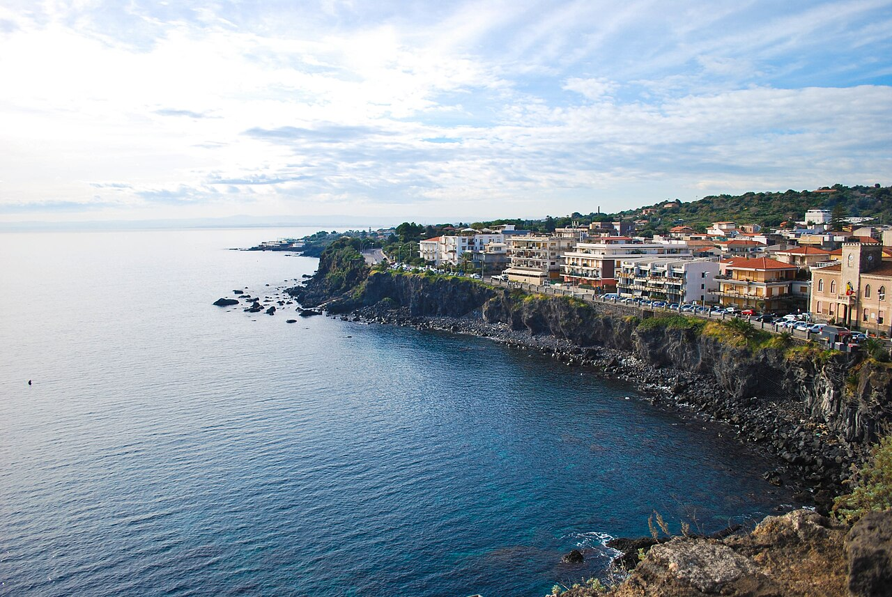
*The castle from the sea side, showing the full basalt rock platform with
the Norman tower above. Best angle is from the waterfront south of the
castle, looking north — this puts the rock and castle in profile against
the sky. Morning light; the castle faces roughly east.*
8.4 Beaches on This Coast
A note of honesty: the coastline immediately around Aci Trezza and Aci Castello
is primarily rock and lava platform, not sand. It is beautiful. It is dramatic.
It is genuinely good for paddling and rockpool exploration. It is not the wide
sandy beach of a Mediterranean postcard.
If you want sand — and a toddler who wants to dig deserves sand — the options are:
Lido di Plaia (south of Catania, near the airport):
The main city beach of Catania — long, flat, sandy, with sun lounger and
umbrella hire in the lido sections and free public beach (spiaggia libera)
in between. The beach runs for several kilometres and can absorb a lot of
people; in March it will be very quiet. Not the most spectacular coastline
you will see on this trip, but honest and accessible and genuinely sandy.
15 minutes by car from the historic centre — this is a viable option even
for a half-day, and particularly good if the more ambitious day trips get
weathered out.
Fondachello / Mascali (north of Aci Trezza, toward Giarre):
A quieter section of coast, volcanic black sand, less commercial, more local.
The beach is not long, but the atmosphere is relaxed and the sand exists.
Good option if you want coast without the lido structure.
The rocks at Aci Trezza and Aci Castello (already described):
Excellent for everything except sand-based entertainment. For a toddler who
is happy in rockpools and with water access, this is more interesting than
a flat sandy beach.
In March: water temperature is around 14°C — cold enough that swimming
is for the brave. Paddling is fine; swimming is a choice. The weather may be
warm enough to sit on the rocks in the sun comfortably. Do not promise
anyone a beach holiday in March and then be surprised by the sea temperature.
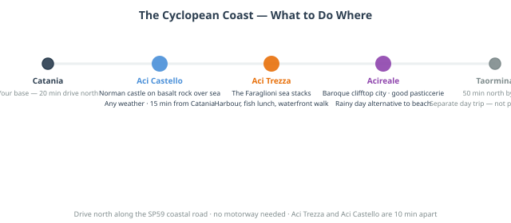
*A simple illustrated map of the 20km coastal strip from Catania northward
through Aci Castello, Aci Trezza, and Fondachello/Mascali. Each location
marked with icons: boat trips (Aci Trezza), castle (Aci Castello), sandy
beach (Lido di Plaia and Fondachello). Driving times from the historic centre.
Clean, illustrated style matching the rest of the guide.*
8.5 Eating on the Coast
This is, without competition, the easiest eating decision of the week.
You are on a coast with fishing boats. Order fish. The fish was in the
water this morning. Order the grilled swordfish, or the pasta with clams,
or whatever the waiter suggests when you ask what is freshest. Do not
order the pasta with meat. You are on the Cyclops coast in Sicily. Order
the fish.
Best area for lunch: the waterfront restaurants in Aci Trezza, facing
the harbour. They are unpretentious, the tables are often outside with
sea views, and the pricing is honest — this is a local eating area, not
a tourist destination with tourist pricing.
What to drink with it: the house white will be a local Sicilian white —
probably not Etna Bianco, but something from the DOC Sicilia range that will
be cold, clean, and entirely correct with grilled fish. Order a litre carafe
rather than a bottle if you want something simple and good without a decision.
For the toddler: pasta with butter or tomato sauce (al pomodoro) is
available everywhere and is exactly as good as it sounds when made with
good pasta and good tomatoes. Blood orange juice if they have it. Fresh
bread while you wait, which will arrive without asking because Sicily.
Budget context: lunch on the coast for two adults and a toddler, with
drinks, should be €30–40 in a mid-range waterfront trattoria in Aci Trezza.
Substantially cheaper than Taormina; comparable to a good lunch in Catania.
8.6 Acireale: The Rainy Coast Alternative
If the coast day is too wet for the rocks and the beach, Acireale —
10 minutes north of Aci Trezza on the SS114 coast road — is one of the
better-kept secrets of the Catania hinterland. It is a small baroque city
at 160m altitude on the slopes above the coast, largely ignored by tourists
and entirely worth an hour or two.
The historic centre has a cathedral, a fine baroque piazza (**Piazza del
Duomo), and the extraordinary Basilica dei Santi Pietro e Paolo**
with its peculiar twin spires that are visible for miles along the coast.
There are good pastry shops and bars in the centre. In late January and
February, Acireale hosts the most elaborate Carnival celebrations in all
of Sicily — papier-mâché floats of extraordinary size and craft. In March,
a week after Carnival, the town is quiet and the pasticcerie are still
stocked.
In the rain: the covered market near the centro, a coffee in one of
the old bars on the piazza, a walk to the belvedere that looks back down
over the coast. An easy half-day, very local, costs nothing.
A final thought on the coast day: it is tempting to try to pack more
into it — to drive further north to Taormina while you're already going
that direction, or to add Acireale and Aci Trezza and the beach all in
one go. Resist this instinct. The coast day works precisely because it
is not packed. The value is in sitting on a harbour wall looking at
mythological sea stacks and eating fresh fish without anywhere to be
afterward. That is the whole point. Let it be enough.
Next: Chapter 9 — Eat Your Way Through Catania
Chapter 9: Eat Your Way Through Catania
*"In Sicily, eating is not a biological necessity. It is a cultural
position. A declaration of values. A form of argument."*
There is a reason this chapter comes after all the day trips and before
the practical tips. Food is not a footnote to your time in Catania — it is
woven through everything you do, every morning, every afternoon, every evening.
The granita you had on the first day. The fish you watched being sold at La
Pescheria at 8am and then ate for lunch an hour later. The arancino you ate
standing up in the street because there was nowhere to sit and no time to wait.
All of that is this chapter. So is the history behind it — because to eat
well in Sicily, it helps to understand why Sicilian food tastes the way it
does, and the answer to that question is twelve centuries of Arab, Norman,
Greek, Spanish, and Italian history all ending up in a single dish.
9.1 The Arab Kitchen — Sicily's Secret Ingredient
Here is the thing most people don't know about Sicilian food: it is profoundly,
structurally Arab.
Between the 9th and 11th centuries, Arab and Berber forces from North Africa
controlled most of Sicily and transformed its agriculture, its irrigation, and
its diet more thoroughly than any conqueror before or after. They introduced
sugar cane — and with it the concept of confectionery that defines Sicilian
pastry culture today. They introduced rice — and with it, eventually, arancino.
They introduced aubergine, which became the central ingredient of two of Sicily's
defining dishes (caponata and pasta alla Norma). They introduced almonds,
pine nuts, raisins, saffron, cinnamon, and cumin — the spice vocabulary that
makes Sicilian cooking unlike any other regional Italian cuisine and immediately
recognisable once you know what you're tasting.
The Arab sweet-sour flavour combination — agrodolce — runs through Sicilian
cooking as a structural principle. Sweet elements (raisins, honey, sugar) and
sour elements (vinegar, citrus) appear together in both savoury and sweet dishes
in combinations that would be unusual in northern Italian cooking and that trace
directly back to the medieval Arab kitchen. Caponata: sweet-sour. Sarde a
beccafico: sweet-sour. The flavour of a good Sicilian aubergine dish: sweet-sour.
This is not ancient history. It is what your food tastes like. Every time you
eat something in Catania this week, you are eating a culinary tradition that
absorbed Arab, Greek, Norman, and Spanish influences over a thousand years and
emerged as something entirely its own.
9.2 The Essential Catanian Foods
What follows is not a comprehensive list of Sicilian food — that would be
a book in itself, and a long one. This is the list of things you should
specifically eat in Catania, ideally in the way described, ideally in the
order that your schedule and appetite allow.
Granita con Brioche — The Sicilian Morning
You have already had this. You will have it again. You should have it every
morning if that is what you want, because it is exactly that kind of thing.
A Sicilian granita is not a smoothie, not a slushie, not a snow cone. It is
a semi-frozen preparation made from water, sugar, and a real flavouring
ingredient — almonds, pistachios, coffee, citrus, fresh berries, mulberry,
jasmine — that is agitated as it freezes to produce a fine, icy, intensely
flavoured texture that is somewhere between sorbet and crushed ice and neither.
It is served in a glass, often with a small portion of panna (whipped cream)
on top, alongside a brioche — a soft, slightly sweet bread roll made with
lard that is the Sicilian version, distinct from the French brioche.
You eat the brioche with the granita. You break off a piece and use it to
scoop. Or — the Catanian version — you split the brioche open and fill it
with the granita directly, eating it like an ice cream sandwich. This is
breakfast. Not a dessert, not a treat — breakfast. The bar culture around
this is completely normalised; ordering a granita at 7:30am alongside your
espresso raises no eyebrows.
The best flavours: almond (mandorla) is the most traditional and the
most Sicilian — made from ground almonds and almond milk, intensely flavoured,
completely different from anything you'll have had before. Pistachio
(pistacchio) is rich and extraordinary, especially if made with Bronte
pistachios. Coffee (caffè) is the purist's choice. Lemon (limone) is
sharp and clean. Mulberry (gelsi) in season (late spring/summer) is exceptional.
Where to get it: any good bar or pasticceria in Catania. The rule of thumb:
if the granita is made on site (not from a commercial preparation), it will
be better. Ask if it is artigianale (artisan-made). The price is low
everywhere — this is not a premium product.
Arancino — Catania's Own
The arancino (Catanian) or arancina (Palermitan) debate is the most actively
contested food argument in Sicily, and it is about both the name and the shape.
In Catania, it is arancino (masculine), it is conical — shaped like
a small version of Etna, a point that Catanesi make with complete seriousness —
and the standard filling is a ragù of meat, tomato, and peas. In Palermo,
it is arancina (feminine), it is round, and the culture around it is
different in ways that Palermitans will explain at length if given the
opportunity.
In both cases: a ball of cooked and seasoned risotto rice, shaped around a
filling, breaded, and deep fried until the exterior is golden and crunchy
and the interior is hot and soft and yielding. When done well — and in
Catania, it is done well frequently — it is one of the great street food
experiences anywhere.
The fillings: the classic ragù (meat, tomato, peas) is the baseline.
Butter and mozzarella (al burro) is the alternative — simpler, excellent.
Modern variants include spinach and ricotta, pistachio and sausage, and
whatever the creative arancino-maker of the day has decided to try. The
classic ragù is the right first order.
When to eat it: technically any time of day, but arancino is quintessentially
a morning or midday food in Catania — eaten standing up at a bar, wrapped in
paper, before or during the morning market. It is not a dinner. It is not a
sit-down restaurant item. It is street food, and it should be eaten as such.
Where to get it: the bars around La Pescheria are the traditional morning
arancino territory. Find the place with a queue of people in work clothes.
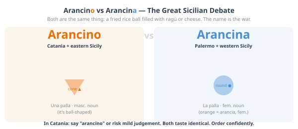
*A fun illustrated spread: on the left, the Catanian arancino — conical shape,
labelled with the Etna comparison, masculine article, "al ragù" filling. On the
right, the Palermitan arancina — round shape, feminine article, different filling
tradition. A map of Sicily showing the approximate boundary between the two
naming traditions. Tone: playful, partisan (this guide is from Catania), clearly
not taking itself too seriously.*
Pasta alla Norma — The City's Own Pasta
This is Catania's contribution to the canon of Italian pasta dishes, and it
was invented here, and it is named after an opera, and this is entirely normal
for a city that produced Vincenzo Bellini.
Bellini — whose opera Norma premiered in Milan in 1831 and immediately
entered the repertoire of great works — was born in Catania in 1801. His
birthplace, on Piazza San Francesco, is now a museum. His monument stands in
the public gardens. The Teatro Massimo Bellini — the city's main opera house,
inaugurated in 1890 — is named after him. And, most deliciously, when a local
chef created a pasta dish so good that a fellow Catanian exclaimed *"è una
Norma!"* — meaning it was as magnificent as Bellini's opera — the dish kept
the name.
The dish: rigatoni (or sometimes spaghetti) with a fresh tomato sauce,
deep-fried slices of aubergine, a grating of ricotta salata (a firm, salty,
dry ricotta quite different from the fresh version), and fresh basil. It is
simple, summer-focused, and completely dependent on the quality of its
ingredients — which in Catania in the tomato and aubergine season is
exceptional. In March, it is slightly off-peak seasonally, but still very good.
If someone tells you something is una Norma in Catania, they mean it's the
best thing they've had in a while. Cook this dish when you get home and tell
people the story. They will be impressed.
Sarde a Beccafico — The Arab-Norman Palimpsest on a Plate
This dish is a direct taste of the Arab-Norman fusion that defines so much
of Sicilian cooking. Fresh sardines, butterflied and filled with a mixture
of breadcrumbs, pine nuts, raisins, and sometimes orange zest, then rolled,
packed tightly in a baking dish, and baked. The sweet (raisins, orange) and
savoury (sardines, breadcrumbs) combination is precisely the agrodolce
principle at work — and the ingredients trace directly to the Arab pantry of
9th-century Sicily.
The name refers to the beccafico — a small migratory bird that in autumn
grows fat on figs and was considered a delicacy by the Sicilian aristocracy.
The rolled sardines, tails pointing upward, are said to resemble the little
birds. This is the kind of culinary metaphor that tells you something about
the culture that created it: a dish invented to let ordinary people eat
something that looks like an aristocratic delicacy, named with a knowing wink.
It is not universally available in Catania's restaurants — more common in
Palermo, where it is a staple — but when you see it, order it.
Caponata — Sicily in a Bowl
A sweet-sour aubergine stew that appears everywhere in Sicily as an antipasto,
a side dish, or a meal in itself. The core ingredients are aubergine (fried
separately and then combined), tomato, celery, olives, capers, vinegar, and
sugar. The balance between the sweet and the sour is the cook's art, and it
varies significantly from kitchen to kitchen.
Caponata is served at room temperature, which is correct and intentional —
it is not a hot dish. It improves with sitting. The best version you eat this
week will probably be one you have for lunch as an antipasto when the kitchen
made it that morning or the night before.
Take some home if you can: good-quality jarred caponata is sold in the
markets and in good food shops throughout Catania, and it is one of the more
transportable and authentic things to bring back.
Street Food at La Pescheria
The market experience includes eating. This is not optional.
Along the edges of La Pescheria, especially at the street-facing end near the
arch on Via Garibaldi, vendors sell prepared seafood for immediate consumption.
The main things to try:
Polipo bollito — boiled octopus, served whole (for a small octopus) or
in chunks, with lemon and salt. Eaten standing up with a toothpick from a
paper cup. Extraordinarily fresh. A specific kind of delicious that only works
when the octopus was in the water the previous day.
Ricci di mare — sea urchin, split open in front of you, the orange interior
scraped out and spread onto a piece of bread. Sea urchin has a flavour that
is described inadequately as "intensely oceanic" — it is the concentrated
essence of the sea. You either become immediately addicted or you do not.
There is almost no middle ground.
Cazzilli — small fried potato croquettes, simple, addictive, sold from
carts near the market and throughout the street food scene of Catania.
Fried things in paper cones — various small seafood items, battered and
fried, sold by weight. Order a mixed portion and eat it walking.
None of this costs much. All of it is better eaten at 8am, leaning against
the market wall, with a coffee from the nearest bar as counterpoint.
Cannoli — The One You Came For
Let us address the cannolo directly, because there are cannoli and there are
cannoli, and the difference matters.
The shell should be thin and crisp, made from fried pastry dough, and it should
shatter when you bite into it. If it does not shatter, the shell has been
sitting too long and the filling has softened it. This is not a good cannolo.
The filling is fresh sheep's milk ricotta, sweetened, sometimes flavoured
with vanilla or a little cinnamon, studded with chocolate chips or candied
orange peel or pistachio. The ricotta should taste of sheep's milk — fresh,
slightly grassy, creamy. If it tastes of nothing in particular, it is not
fresh sheep's milk ricotta.
The crucial rule: the cannolo should be filled in front of you, to order.
A cannolo that was filled in advance, sitting in a display case for hours,
is a version of a cannolo that you should decline politely and move on. The
shell will have absorbed moisture from the ricotta and lost its structural
integrity. The flavour combination that makes a cannolo extraordinary requires
the contrast between the crisp shell and the soft filling to be intact. This
only happens if you eat it within minutes of filling.
The best cannoli in Catania are served at the pasticcerie that make the shells
and the ricotta themselves. Ask locals; the recommendations will be specific
and vehement.
For the toddler: yes. Obviously yes.
Minnuzzi di Sant'Agata — The Pastry With a Story
Available in every pasticceria in Catania, particularly in and around the
festival period in February: small white confections made from marzipan or
a ricotta-based filling, shaped and iced to represent the breasts of Sant'Agata.
The saint was martyred by having her breasts cut off, and Catanesi have been
making pastries in her honour in this specific shape since at least the medieval
period.
This is — to understate considerably — an unusual confection. It is also
very good. The marzipan version is almond-flavoured and dense; the ricotta
version is lighter and slightly sweeter. They are sold year-round and are
one of the more distinctively Catanian things you can buy or eat here.
The story behind them is worth knowing, and worth telling to anyone who asks
why your souvenir box of pastries looks the way it does.
The Blood Orange — Not a Metaphor, Actually a Blood Orange
The Arancia Rossa di Sicilia — the blood orange of Sicily — is a DOP
(Protected Designation of Origin) product grown in the volcanic soil of the
Etna foothills and the Catania plain. Three varieties: Moro (deepest red, most
pigmented, slightly berry-forward), Tarocco (the sweetest, most complex, the
one most Sicilians consider the finest), and Sanguinello (darker and more
tannic). The red pigmentation comes from anthocyanins that develop in response
to cold night temperatures — the same volcanic soil and diurnal temperature
variation that makes Etna wine distinctive is what makes the blood orange extraordinary.
These are not the blood oranges you buy in the supermarket at home. The ones
grown here taste different: more complex, with a berry note layered over the
citrus that makes them unlike any other orange. The season is roughly November
to May — you are going at the right time.
Buy them at the market by the kilo. They are extraordinarily cheap. Eat
them as fruit; drink the juice squeezed fresh (spremuta) at any bar; take
a bag home if your luggage allows it.
9.3 Where and How to Eat
The Structure of a Sicilian Meal
A proper Sicilian restaurant meal works in this sequence:
Antipasto — the starter. Often the best course. In Catania: caponata,
bruschetta, seafood selections, arancino, local cheeses, cured meats.
Order more than you think you need.
Primo — the pasta or risotto course. This is not a starter in the
Anglo-Saxon sense — it is a full course. Pasta alla Norma, pasta with
clams (alle vongole), pasta with sea urchin (ai ricci) if you're feeling
ambitious, pasta al nero di seppia (with cuttlefish ink, dramatic-looking,
excellent-tasting).
Secondo — the main course. Fish is the right call in Catania: grilled
swordfish (pesce spada alla griglia), grilled tuna (tonno), baked sea
bream (orata). Meat is also available; the Sicilian mixed grill is good.
Vegetables served separately as contorni — order the grilled aubergine
and the fried courgettes.
Dolce — dessert. Cannolo, obviously. Cassata siciliana (if you're in
the mood for something baroque in structure as well as origin — a ricotta
and marzipan cake with candied fruit). Gelato. Or, if you have been eating
for two hours, a small almond pastry and another coffee.
You do not have to eat all of this at every meal. In practice, a lunch
might be antipasto + primo, or just a good secondo with bread. The full
four-course structure is for evenings and celebrations. But knowing it
means you will not be confused when the menu lists five different sections
and the waiter expects you to navigate them.
Timings — The Most Important Practical Note
Sicilian meal times are not Italian meal times, which are already late by
northern European standards. They are later.
Breakfast: 7–10am, at a bar, standing or at a small table.
Lunch: 1pm–3pm. Restaurants will not seat you for lunch at noon; they
will be setting up. The earliest realistic sit-down lunch is 12:45pm.
Dinner: no earlier than 8pm. Many restaurants don't fill until 9pm.
The full Sicilian dinner culture moves late in a way that is difficult to
reconcile with a toddler who needs to be in bed by 8:30pm.
The family solution: eat your main meal at lunch, when the food is the
same quality, the pace is slightly faster, and the prices are occasionally
lower. Use dinner as a lighter, earlier affair — a tavola calda (hot food
counter), a pizza, something simple at 7:30pm before the local restaurants
have warmed up. Nobody will think less of you for this.
Types of Places to Eat — The Hierarchy
Ristorante: full service, full menu, full prices. The place for a special
occasion meal.
Trattoria: simpler, often family-run, shorter menu focused on local cooking.
The correct choice for a good lunch at honest prices. Usually no printed menu
or a very short one — the waiter will tell you what's available.
Osteria: even simpler, often wine-focused, sometimes no kitchen or very
limited food. For drinking, primarily.
Tavola calda: literally "hot table" — a canteen-style place with prepared
food on display and counter service. Extremely good value, completely unpretentious,
often excellent. The closest Sicilian equivalent to a good deli lunch. Very
toddler-friendly.
Bar/Pasticceria: for breakfast, granita, coffee, pastries, a quick arancino.
Not for lunch or dinner, but the most important category for the first two hours
of every day.
Street food vendors: at markets, in the streets near the fish market, at
certain fixed positions around the city centre. The cheapest eating in Catania
and, often, the most memorable.
[INFOGRAPHIC: The Catania Food Map]
*A visual guide to the key dishes, laid out as a day: what you eat for
breakfast (granita, brioche, espresso, arancino), what you eat at the market
(octopus, ricci, fried things), what you eat at lunch (pasta alla Norma,
caponata, sarde a beccafico), what you eat for dessert (cannolo, cassata,
gelato, minnuzzi di Sant'Agata). Central illustration could be an arancino
with everything radiating from it. Warm colours, illustrated style.*
9.4 Drinking in Catania
Coffee
Sicily takes coffee seriously in the Neapolitan tradition — espresso, short,
strong, consumed quickly at the bar counter. The Sicilian variation: coffee
granita for breakfast, as described above, or caffè d'orzo (barley coffee)
as an alternative if you want something lighter. Ordering a "latte" in a Sicilian
bar will get you a glass of warm milk. Order cappuccino until 11am; after
that, only tourists order milky coffee, and you will be identified as one.
Wine
Sicily is a serious wine region with a rapidly evolving reputation, and the
wines available in Catania for local prices represent extraordinary value.
The main categories to know:
Etna Rosso — made from Nerello Mascalese grapes grown at altitude on
the volcanic slopes of Etna. Elegant, perfumed, with a lightness of body
that can surprise people expecting a big Sicilian red. The comparison often
made by wine critics is to Burgundy — not in flavour, but in the relationship
between the wine, the specific volcanic soil (terroir), and the altitude.
Several small producers are now internationally famous and exported at prices
that would make your eyes water in London or New York. In Catania you can
drink them for €15–25 a bottle. Do.
Etna Bianco — made from Carricante and other local white varieties.
Mineral, saline, with a freshness and complexity that makes it one of the
most interesting Italian whites of the moment. The right wine with the
grilled fish at Aci Trezza. The right wine with the seafood pasta in Ortigia.
The right wine in general, throughout the week.
Nero d'Avola — the great red grape of southern Sicily, grown widely
across the island. Rich, dark, full-bodied, with a flavour of black cherries
and dark spice. Not an Etna wine, but a Sicilian classic. Good with the
meat-based pasta dishes and the secondo of grilled meat.
Malvasia delle Lipari — technically from the Aeolian Islands, but
available throughout Sicily. A sweet, amber-coloured dessert wine with
extraordinary concentration and a honeyed, apricot character. Order it with
a cannolo or at the end of the meal instead of dessert.
Blood Orange Juice
Already covered in the food section, but worth repeating in the drinks
context: spremuta di arancia rossa — freshly squeezed blood orange juice —
is available at every bar that has a juicer and is the single best non-alcoholic
drink of the trip. Order it for the toddler every morning. Order it for yourself
every morning. It is a different product from orange juice as you know it.
Next: Chapter 10 — Family Field Guide
Chapter 10: Family Field Guide
*"The best thing about travelling in Sicily with a small child is that
Sicilians think a small child is the best thing about anything."*
Everything in this chapter has been mentioned in context throughout the guide.
This is where it all comes together in one place — the consolidated practical
reference for the reality of a week in Catania with a toddler.
Read this before you arrive. Refer back to it during the trip when something
goes sideways, which it will, and which is fine.
10.1 Travelling with a Toddler in Sicily: The Reality
Let's start with the thing nobody tells you clearly enough: **Sicily is
one of the best places in Europe to travel with a small child.** Not because
of the infrastructure — the infrastructure is uneven at best, as you'll read
below — but because of the culture.
Italians love children. Sicilians love children with a particular warmth
and expressiveness that can be startling if you come from a northern European
tradition where other people's children are left to their parents' management.
In Sicily, a toddler in public is a community event. The elderly woman at the
market will stop to examine your child and pronounce on their health, beauty,
and correct feeding. The waiter will bring something your child didn't order
because he thought they might like it. The person at the adjacent café table
will make faces and play games with the toddler for twenty minutes without
any social awkwardness whatsoever.
This attention is genuine and affectionate. It is not intrusive in the way
that can make parents defensive. Accept it with warmth and a smile. Your child
will be treated, on this trip, as if they are the most important person in
every room they enter. This is good for the child and significantly reduces
the social friction of a crying episode in a restaurant.
The practical corollary: Sicilian restaurants and bars are almost always
genuinely child-friendly in terms of attitude, even when they are not
specifically equipped for children. High chairs may or may not be available;
changing facilities are rarely signed but usually possible if you ask; noise
and mess are tolerated with a generosity that makes eating out with a toddler
less stressful than in many northern European equivalents.
The main challenge is not the attitude but the terrain. The historic centre
of Catania is paved in lava stone — uneven, occasionally slippery, genuinely
difficult for a pushchair in the narrower streets. The archaeological sites
have gravel paths. The clifftop villages have steps. A flexible approach to
the pushchair-versus-carrier question will serve you better than insisting
on one mode of toddler transport for all situations.
10.2 Stroller & Pushchair Survival
The consolidated guide to navigating Catania and the main day trip sites
with a pushchair. The detailed notes per location are in the relevant chapters;
this is the summary version you can use for quick reference.
Central Catania — Street by Street
Green (smooth, wide, pushchair-friendly):
Piazza del Duomo and all four sides of the square
Via Etnea, the main street (relatively smooth basalt paving, wide pavements)
The waterfront (Lungomare) south of the cathedral
Interior of the Cathedral of Sant'Agata
Castello Ursino courtyard
Villa Bellini (public park — gravel paths, but wide and level)
Amber (manageable with care — slower pace, some lifting):
The approach to La Pescheria (steps down from street level; ramp usually available at the side — locate it before descending)
Inside La Pescheria (narrow, wet ground, navigable but careful)
Via dei Crociferi (beautiful, lava-cobbled, uneven — worth it, but slow)
The streets around Piazza Bellini
Most of the shopping streets running east-west off Via Etnea
Red (carrier recommended — pushchair possible but frustrating):
The Roman theatre interior (steps, uneven archaeological surface)
The narrow vicoli (lanes) in the Arab quarter south of the cathedral
Any street described as a "lane" or "alley" in the text above
The approaches to Castello Ursino through the surrounding neighbourhood
The rule: if the street looks like a film set for a medieval drama,
leave the pushchair where it is and put the toddler in the carrier.
Day Trip Sites
Site
Pushchair verdict
Carrier needed?
Etna (cable car base)
Good — car park and Rifugio area flat
Yes, above cable car
Etna (upper mountain)
Impossible
Essential
Taormina — Greek theatre
Difficult — steps
Yes, for upper tiers
Taormina — Corso Umberto
Manageable
Not required
Taormina — Villa Comunale
Good — wide paths
Not required
Syracuse — Neapolis park
Amber — gravel paths
Useful for cave section
Syracuse — Ortigia
Excellent — smooth stone streets
Not required
Aci Trezza — waterfront
Good
Not required
Aci Castello — castle
Manageable to base; steps up castle
For castle climb
*The walking map from Chapter 3, now colour-coded: green streets (smooth,
wide), amber streets (manageable with care), red areas (carrier recommended).
Practical and honest — the most-used infographic in the guide. Should be
designed for easy reading on a phone screen as well as printed.*
Equipment Recommendations
Pushchair: lightweight and foldable is strongly preferred over a large
frame buggy. The Catania lava streets require occasional lifting; the cable
cars and jeeps on Etna require folding and stowing; the smaller the frame
when folded, the less it becomes a logistics problem.
Carrier/sling: essential. A well-fitting soft structured carrier (Ergobaby,
Tula, or similar) is the most important piece of equipment after the pushchair.
It handles all the amber and red situations above without stress. For Etna
above the cable car station, it is mandatory.
Rain cover: March rain is real. A good pushchair rain cover means a
shower doesn't end the day.
Sunshade: March sun can be stronger than you expect, particularly near
the coast. A pushchair with a good canopy or an attachable shade is useful
from midday onward on clear days.
10.3 Managing the Heat
March is generally kind — daytime temperatures of 16–20°C in Catania, cooler
on Etna, occasionally warm in direct sun near the coast. The intense midday
heat that makes July and August brutal does not apply to your trip.
That said:
Sun intensity at lower latitudes is higher than at home even in March.
A child who wouldn't burn in an hour in northern Europe in March can burn
in 30 minutes in direct Sicilian sunshine. Sunscreen (SPF 50) every morning
for any exposed skin. A sun hat is not optional.
The midday stop (noon–3pm) is built into the itinerary for good reason.
Even in March, the hours between noon and 3pm are the least pleasant for
walking and the most pleasant for sitting in the shade with food and drink.
The toddler's nap window coinciding with this period is not a compromise —
it is the correct approach.
Water: carry it. The child needs it; you need it. Sicily is warm enough
that dehydration creeps up on people who are used to cooler climates. Refill
from the street-level water fountains (nasoni) that appear throughout the
city, or buy large bottles at the supermarket and carry a smaller one.
For Etna specifically: the temperature at altitude is dramatically colder
than in the city, regardless of season. A warm jacket, gloves if you have
them, and an extra layer for the toddler are not overcautious — they are
necessary. The weather on the mountain is its own system.
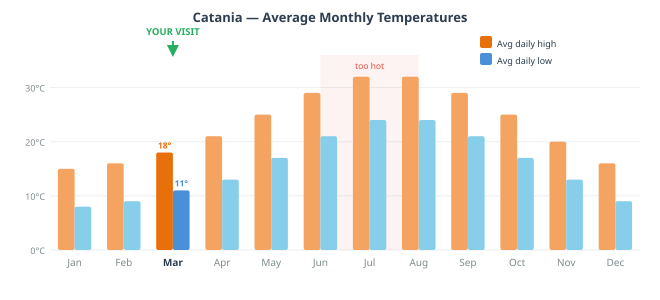
*A simple chart showing average daytime highs and lows for each month of
the year, with the best visiting periods for families highlighted. March
shown as optimal: warm enough to be comfortable, not yet peak tourist season,
blood orange season, manageable rainfall. Summer months flagged for heat
and crowds; winter for occasional cold and closures.*
10.4 Budget Guide
Sicily is not an expensive destination by western European standards, and
Catania is meaningfully cheaper than Palermo, Taormina, or the resort towns
of the south coast. Staying in the historic centre means you spend almost
nothing on local transport during the city days.
The main budget categories for a week:
Accommodation
You've sorted this already (historic centre). Typical nightly rates in
Catania for a family room in a good B&B or small hotel: €80–150/night
depending on quality and exact location. Higher-end apartments with kitchen
access can offer better value for a family staying a week.
Food
This is where Sicily rewards you most for not defaulting to tourist-facing
restaurants:
Meal type
Typical cost for 2 adults + toddler
Bar breakfast (granita + brioche + coffee)
€6–8
Market street food lunch
€8–15
Tavola calda / quick lunch
€15–25
Trattoria lunch, full meal
€30–50
Good restaurant dinner
€50–80
Gelato per person
€2–3
Arancino per person
€2–3
The strategy for keeping food costs reasonable without compromising quality:
eat your main meal at lunch (same food, same quality, slightly lower prices
and faster service) and use evenings for lighter, simpler eating.
Most of Catania's baroque exterior is free to experience — the streets,
the piazzas, the facades. The things that charge admission:
Roman theatre: small entrance fee (~€4–6 per adult)
Castello Ursino museum: free on certain days; check in advance
Benedictine Monastery: tour fee (~€10 per adult)
Palazzo Biscari: tour fee (~€8–12 per adult)
Children under various ages are typically free or heavily discounted —
ask at each entrance.
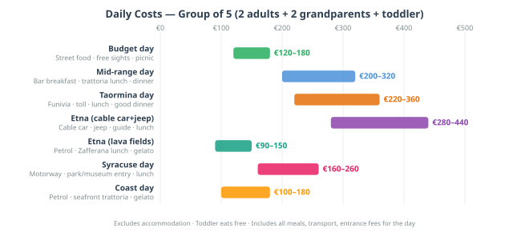
*A visual breakdown of a typical family day (2 adults + toddler) in three
scenarios: budget day (street food, free sights, picnic), mid-range day
(trattoria lunch, one paid attraction, gelato), and splurge day (restaurant
dinner, guided tour, the works). Simple bar chart or split-circle graphic.
Should convey that even the "splurge" day is reasonable by European standards.*
10.5 The Timing Cheat Sheet
The single most useful thing in this chapter for day-to-day decisions.
When to be where, to get the best of each place without fighting crowds,
bad light, or closed doors.
Place / Activity
Best time
Why
La Pescheria market
7–10am
Peak trading, best display, freshest food
Piazza del Duomo
Early morning or golden hour (6pm)
Light on the cathedral, fewer groups
Via Etnea walk
Morning (before 11am) or late afternoon
Shade from buildings; afternoon light on Etna
Etna cable car
Depart Catania by 7:30am
Clouds build from early afternoon; summit clearest in morning
Taormina Greek theatre
9am opening (go first thing)
Tour buses arrive mid-morning; early for best light on Etna backdrop
Syracuse Neapolis park
9am, full morning
Large site; heat and crowds build through the day
Ortigia, Syracuse
Afternoon into evening
Better light on pale stone; market is morning only
Aci Trezza / coast
10am–1pm, then 4–7pm
Midday swim window before afternoon siesta
Benedictine Monastery
Any tour time; check schedule
Indoor — rain-proof; book in advance
La Pescheria (second visit)
Same: 7–10am
It rewards returning; you'll see more the second time
Passeggiata
6–8pm, anywhere on Via Etnea
The daily social ritual; join it on your last evenings
Castello Ursino
Late afternoon
Cooler, quieter, free on certain days
Bar / granita breakfast
7–9am
Locals' timing; best atmosphere and freshest pastries
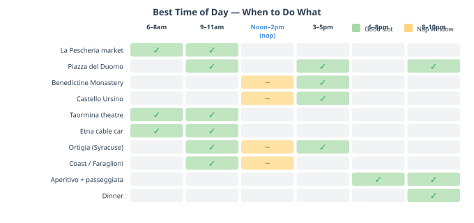
*A visual timeline: a 24-hour clock or horizontal time bar (6am to 10pm)
with each major attraction or activity placed in its optimal window. Colour
coded by type (market / culture / outdoor / eating). Could run as a single
wide landscape infographic suitable for printing and consulting on the day.
The toddler nap window (roughly 12:30–3pm) should be clearly marked as
"strategic downtime" in a warm colour.*
10.6 A Short Glossary of Useful Sicilian
Standard Italian will get you everywhere in Catania. But Sicilian — the
island's distinct language, which has more in common with ancient Greek, Arab,
and Norman French than with standard Italian — is spoken everywhere, particularly
between locals and particularly by older generations. A few words and phrases
will go a long way; the attempt alone will be received with disproportionate
warmth.
Everyday words:
Sicilian
Italian equivalent
When you'll hear it
Beddu / Bedda
Bello / Bella (beautiful)
Said about your toddler, constantly
Picciriddu / Picciridda
Bambino / Bambina (little child)
Also about your toddler
Manciamu!
Mangiamo! (let's eat!)
At any table, before food arrives
Manciari
Mangiare (to eat)
Everywhere
Fici
Fichi (figs)
At the market
Cosi duci
Cose dolci (sweet things)
In a pasticceria
Talìa!
Guarda! (look!)
What people will say to point things out to your child
Phrases that will make Sicilians delighted you tried:
"Beddu chistu" (BE-ddu KI-stu) — "This is beautiful." Said in a bar about
a particularly good granita, in a piazza about the view, anywhere appropriate.
"È 'na Norma!" — The expression meaning "it's excellent/magnificent,"
derived from the pasta dish and Bellini's opera. Use it after a particularly
good meal.
"Cchiu sanu!" (KYOO SA-no) — literally "be healthier!" — an exclamation
directed at children, meaning something like "grow strong and well." You will
hear this said to your toddler. The correct response is a smile and grazie.
On the practical Italian side — the phrases that actually help:
"Avete un seggiolone?" — Do you have a high chair?
"Dov'è il bagno?" — Where is the bathroom?
"Scusi, ha qualcosa per i bambini?" — Excuse me, do you have something for children? (in a restaurant where the menu has nothing obvious)
"Posso avere il conto, per favore?" — Can I have the bill, please?
"Com'è fresco il pesce?" — How fresh is the fish? (always ask)
"Cos'è questo?" — What is this? (pointing at something in a market you don't recognise — the correct way to discover excellent things)
A final note on flexibility and the Sicilian tempo: The plans in this
guide are frameworks, not contracts. Sicily operates at a rhythm that does
not always synchronise with printed schedules, booking confirmations, or
stated opening hours. Restaurants close for a family occasion with no
notice. Museums have unexpected staff shortages. The cable car on Etna
closes for maintenance on a day you'd planned to go up. Shops shut for
the afternoon feast of a local saint you've never heard of.
None of this is frustration once you decide it isn't. The Sicilian response
to all of the above is: and so? We find something else. The something
else, in a place this rich, is never hard to find. Adopt the arrangiarsi
mindset — the art of improvising — and it becomes one of the things you
remember most fondly about the trip. The planned moments are often the good
ones. The unplanned ones are frequently the best.
Next: Chapter 11 — Quick Reference
Chapter 11: Quick Reference
*This chapter is designed to be the page you photograph on your phone before
you go out each day. No prose. Just the information, fast.*
11.1 Emergency & Medical
Emergency (all services)
112
Police (Carabinieri)
112
Ambulance
118
Fire
115
Nearest main hospital
Ospedale Garibaldi Centro, Piazza Santa Maria di Gesù — ~15 min walk from the historic centre
EU EHIC card
Covers emergency treatment at public hospitals — carry it always
Pharmacy symbol
Green cross; hours typically 9am–1pm and 4–8pm
*Emergency pharmacy (farmacia di turno)*
Posted in the window of every closed pharmacy
Non-emergency doctor
Ask at your accommodation; most areas have a guardia medica service
11.2 Catania Practicalities
Airport
Catania Fontanarossa (CTA) — 5km south of the historic centre
ZTL zone
Do not drive into the centro storico. Cameras fine you automatically. Ask your accommodation for drop-off routing
Parking
Parcheggio Borsellino (Via Dusmet), Piazza Cavour car park — both near the historic centre
Blue lines (on-street parking)
Paid; buy a ticket from the nearest meter; 1–2 hrs typical limit
Taxi
Taxi stands at the main piazzas; or ask your accommodation to call one
Currency
Euro (€); cards widely accepted; carry some cash for markets and smaller bars
Tipping
Not expected as standard; rounding up or leaving small change is appreciated
Water
Tap water is safe to drink. Street fountains (nasoni) throughout the city
Electricity
Italian standard (Type F, 230V); same as most of Europe
Time zone
CET (UTC+1) in winter; CEST (UTC+2) from late March
Language
Italian; Sicilian dialect common between locals; English spoken at most tourist-facing places
11.3 Driving Reference
Motorway (A18 north / A19 south)
Tolled; pay at exit; keep coins or card accessible
Speed limits
130 km/h motorway; 90 km/h regional roads; 50 km/h in towns
Fuel
Fill up in Catania before day trips — no petrol at altitude on Etna
Driving side
Right (same as continental Europe)
ZTL fines
Can arrive by post weeks later; €80–150 per infraction
Roundabouts
Entering traffic yields in theory; in practice, yield to confidence
Parking (blue lines)
Blue = paid; yellow = residents only; white = usually free
11.4 Day Trip Quick Reference
Destination
Drive from historic centre
Toll
Park at
Notes
Mt Etna (cable car)
~45 min
Yes (A18 S)
Rifugio Sapienza car park
Fill up before leaving; cold at altitude
Taormina
~50 min
Yes (A18 N)
Mazzarò — then funivia up
Do not drive into town
Syracuse / Ortigia
~1 hr
Yes (A18/A19)
Neapolis park entrance; then Ortigia bridge
Full day needed
Aci Trezza / Aci Castello
~20 min
No (SS114)
Waterfront parking, Aci Trezza
Free or cheap parking on street
Acireale
~25 min
No
Central piazza area
Good rainy alternative
11.5 Booking Ahead — What Needs Advance Planning
*Etna cable car (Funivia dell'Etna)*
Book online in advance, especially in spring — check funiviaetna.com
Taormina funivia
Walk-up usually fine in March; check funivietaormina.it for hours
Benedictine Monastery tour
Book in advance — fills up. Via the University of Catania cultural programme
Palazzo Biscari
Tours on specific days — check in advance and book
INDA Greek theatre festival (Syracuse)
Odd-numbered years, May–June — not applicable to March visit
Accommodation
Done
Car
Done
11.6 Key Phrases
At the bar / pasticceria
Italian
Meaning
Un caffè, per favore
An espresso, please
Una granita di mandorla / pistacchio / caffè
An almond / pistachio / coffee granita
Con brioche?
With a brioche roll? (they'll ask; the answer is yes)
Una cornetta / un cornetto
A croissant-style pastry
Una spremuta di arancia rossa
A freshly squeezed blood orange juice
At the restaurant
Italian
Meaning
Avete un seggiolone?
Do you have a high chair?
Cos'è il pesce del giorno?
What is today's fish?
Com'è fresco?
How fresh is it?
Cosa mi consiglia?
What do you recommend?
Senza glutine
Gluten-free (if relevant)
Il conto, per favore
The bill, please
Possiamo pagare separati?
Can we pay separately?
È buonissimo
It's absolutely delicious
Navigating
Italian
Meaning
Dov'è il bagno?
Where is the bathroom?
Dov'è la farmacia più vicina?
Where is the nearest pharmacy?
Sto cercando la Piazza del Duomo
I'm looking for Piazza del Duomo
Quanto dista a piedi?
How far is it on foot?
Useful Sicilian (see Chapter 10 for more)
Sicilian
Meaning
Beddu / Bedda
Beautiful (said of your child, constantly)
È 'na Norma!
It's magnificent! (food compliment)
Manciari
To eat
11.7 What to Buy and Bring Home
At the markets (best value; buy direct):
Blood oranges (arancia rossa) — by the kilo; extraordinary, cheap
Local almonds and pistachios — Bronte pistachios from a stall selling them loose
Capers (capperi) — the Pantelleria capers in salt are the finest; also available jarred
Dried oregano, fennel seeds, saffron — local, very cheap, very good
Ricotta salata — the hard salty ricotta used in pasta alla Norma; vacuum-packed
Local honey — Etna wildflower and chestnut varieties from Zafferana area
At pasticcerie and food shops:
Pistachio cream (crema di pistacchio) — the Bronte pistachio spread; like Nutella but actually made of something with flavour. Buy more than one jar.
Almond paste (pasta di mandorle) — Sicilian marzipan, sold in blocks
Good jarred caponata — one of the better Sicilian foods that travels well
Torrone (nougat with nuts) — Sicilian version is softer and better than the mainland variety
At ceramics shops (Taormina and Catania):
Caltagirone style tiles and plates — vivid yellow and blue, extremely packable if wrapped
A single decorative tile as a practical, flat souvenir
Avoid the tourist-facing shops on the main drags; the side streets in both Taormina and the Catania centro have better work at lower prices
What not to bother with:
Limoncello (you can get it at home; it's better in Amalfi anyway)
Mass-produced "Sicilian" products in attractive packaging sold at airport prices
Anything described as a "typical Sicilian product" on a label clearly printed in five languages near the tourist information office
11.8 Useful Apps
App
Use
Google Maps
Navigation — download offline maps for Sicily before you travel
Parkopedia
Finding and sometimes paying for parking
Funiviaetna.com
Etna cable car booking and status
Trenitalia
Train times, if you ever want to use the train between cities
DeepL or Google Translate
Menus, signs, market labels
AccuWeather or Meteo.it
Local weather — check the night before for Etna days
11.9 Notes Space
*Use this page for addresses, recommendations from locals, things you found
that aren't in the guide, restaurants to return to, the name of the bar that
made the best granita, and anything else worth remembering.*
— End of Guide —
*This guide was written for a family of three — two adults and a toddler —
travelling in Catania and the Sicilian east coast in March 2026. It is a
personal document, not a commercial publication. The opinions are honest,
the practical tips are specific, and the food advice should be treated as
the considered position of someone who has thought about Sicilian arancino
for an unreasonable amount of time.*